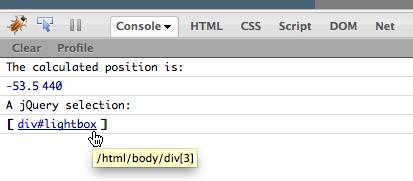
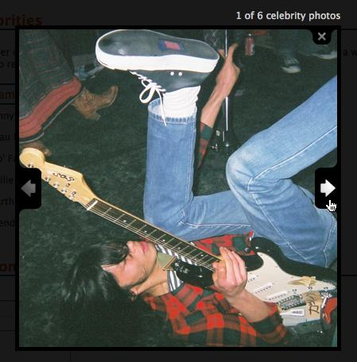

{% include JB/setup %}
{% raw %}
<div>
<div class="calibre3"></div><div class="toc" title="Chapter 4Images and Slideshows"><div class="toc"><div class="toc"><div class="toc"><div class="calibre3"></div><h1 class="title"><a xmlns:saxon="http://icl.com/saxon" id="chapter_images" class="calibre5"></a><span xmlns:d="http://docbook.org/ns/docbook" class="sitepoint-chapter-titlepage-label">Chapter <span class="sitepoint-chapter-titlepage-number">4</span></span><br xmlns:d="http://docbook.org/ns/docbook" class="calibre11"/><span xmlns:d="http://docbook.org/ns/docbook" class="calibre5">Images and Slideshows</span></h1></div></div></div>
  
      

  
      There’s no more fooling around now. With the basics well and truly
  under our belts, we already have unlimited potential to create some
  world-class effects. Our client is over the moon; we’ve dragged his website
  into the present, and now his questionable startup has found favor with
  several of the big social networking sites. He’s asked us to add in some
  “stuff” that really cooks: “image galleries, slideshows, fading effects—the
  works!” And why not? We have the tools, and we have the talent!

  
      It would be a fairly boring Internet (at least visually) without
  images; much of the content we receive on our web-based travels is in the
  form of pictures and design elements such as borders, icons, and gradients
  that help to define our interaction with a web page. When we combine all
  these elements with a healthy dose of jQuery, we start to see some vibrant
  and startling effects emerge. As well as the bog-standard components we’ve
  come to know and love, jQuery provides the means for implementing some less
  common, relatively new effects and features that would be hard to do in
  JavaScript alone.

  
      <div class="toc" title="Lightboxes"><div class="toc"><div class="toc"><div class="toc"><h2 class="title1"><a xmlns:saxon="http://icl.com/saxon" id="d4e3365" class="calibre5"></a>Lightboxes</h2></div></div></div>
    
         

    
         
            <a id="ch04-001"></a>Our client wants Web 2.0, so let’s give him the
    quintessential Web 2.0 effect that is still popular as ever today: the
    lightbox. A <span><strong class="calibre9">lightbox</strong></span>—a term borrowed from
    photography—is used is to display full-sized versions of an image
    thumbnail in a modal dialog. Typically, the entire background becomes
    darker to indicate that it’s been disabled. The user must interact with
    the image (by pressing a close button, for example) to continue working on
    the page.

    
         <div class="toc" title="Custom Lightbox"><div class="toc"><div class="toc"><div class="toc"><h3 class="title2"><a xmlns:saxon="http://icl.com/saxon" id="d4e3372" class="calibre5"></a>Custom Lightbox<a id="ch04-002" class="calibre5"></a>
            </h3></div></div></div>
      
            

      
            Lightboxes are very common these days, and many feature some very
      complex functionality: animations, transitions, as well as the ability
      to display video, or to load content via Ajax. As always, there are some
      excellent plugins available that do all this, and we’ll be visiting one
      of them in the next section—but for the moment, we’ll build our own
      lightbox.

      
            Why build our own? For one thing, we initially just want a basic
      image view without any fanciness, and the extra kilobytes that fanciness
      costs us. We’ll also have the chance to look under the hood and see how
      this type of functionality is implemented.

      
            Our lightbox will be extremely simple: any HTML link that has a
      <code class="email">class</code> name of <code class="email">lightbox</code> will, when clicked, pop up the image
      file that the link points to. The picture will be centered on the
      screen, and the surrounding areas will be disabled and darkened as a
      visual cue. The effect is demonstrated in <a href="ch04.html#fig_lightbox" title="Figure 4.1. Our lightbox effect">Figure 4.1</a>.

      
            Let’s start with the HTML links. They’re just tags pointing at
      image files with a <code class="email">lightbox</code> 
               <code class="email">class</code>, so we can target them in our
      jQuery:

      
            <div class="toc"><a xmlns:saxon="http://icl.com/saxon" id="d4e3386"></a><div xmlns:l="http://docbook.sourceforge.net/xmlns/l10n/1.0" xmlns:d="http://docbook.org/ns/docbook" class="sitepoint-formal-example-heading"><em class="calibre8" title="chapter_04/01_lightbox/index.html (excerpt)">
		
                  <span class="sitepoint-formal-example-filename"><span>chapter_04/01_lightbox/index.html</span></span>
        (excerpt)
	</em></div><div class="toc">
        
               

        
               <pre class="programlisting">&lt;a href="../../images/johnny_400.jpg" class="lightbox"&gt;pic&lt;/a&gt;</pre>
      
            </div></div>

      
            When the image is displayed, we want the entire screen to go dark.
      How do we do this? The easiest way is to add a large <code class="email">div</code> to the page that’s as tall and wide as the
      screen itself. Inside that <code class="email">div</code>, we’ll
      add another <code class="email">div</code> into which we’ll load
      the image.

      
            <div class="toc"><a xmlns:saxon="http://icl.com/saxon" id="fig_lightbox"></a><div class="figure-contents">
        
               

        
               <div class="figure-contents"></div>
      
            </div><p xmlns:l="http://docbook.sourceforge.net/xmlns/l10n/1.0" xmlns:d="http://docbook.org/ns/docbook" class="title4">Figure 4.1. Our lightbox effect<a id="ch04-002f"></a>
               </p></div>

      
            The styling for the overlay is quite straightforward: 100%
      <code class="email">height</code> and <code class="email">width</code>, and a black
      background. Later, we’ll fade the <a id="ch04-003"></a>
               <code class="email">opacity</code> of the element to give it its
      shadowy appearance. The <code class="email">div</code> is
      positioned <code class="email">fixed</code> to lock it in place if the user
      resizes the window, for example. One other trick is to add a spinning
      <a id="ch04-004"></a>loader image to the center of this element. When we start
      loading the image the spinner will display as part of the background. It
      will appear to vanish when the image loads, but in reality it will
      simply be hidden behind the image:

      
            <div class="toc"><a xmlns:saxon="http://icl.com/saxon" id="d4e3413"></a><div xmlns:l="http://docbook.sourceforge.net/xmlns/l10n/1.0" xmlns:d="http://docbook.org/ns/docbook" class="sitepoint-formal-example-heading"><em class="calibre8" title="chapter_04/01_lightbox/lightbox.css">
		
                  <span class="sitepoint-formal-example-filename"><span>chapter_04/01_lightbox/lightbox.css</span></span>
               
	</em></div><div class="toc">
        
               

        
               <pre class="programlisting">#overlay {
  position:fixed;
  top:0;
  left:0;
  height:100%;
  width:100%;
  background:black url(loader.gif) no-repeat scroll center center;
}

#lightbox {
  position:fixed;
}</pre>
      
            </div></div>

      
            Next, we add a <code class="email">click</code> handler to our
      lightbox links. When they’re clicked, we’ll add the dark overlay
      element, the image container, and the image itself. The container isn’t
      strictly necessary for our bare-bones example, but is helpful when you
      want to extend the lightbox’s functionality, such as adding borders,
      descriptions, or <span xmlns:l="http://docbook.sourceforge.net/xmlns/l10n/1.0" xmlns:d="http://docbook.org/ns/docbook">Next</span> and
      <span xmlns:l="http://docbook.sourceforge.net/xmlns/l10n/1.0" xmlns:d="http://docbook.org/ns/docbook">Previous</span> buttons:

      
            <div class="toc"><a xmlns:saxon="http://icl.com/saxon" id="d4e3421"></a><div xmlns:l="http://docbook.sourceforge.net/xmlns/l10n/1.0" xmlns:d="http://docbook.org/ns/docbook" class="sitepoint-formal-example-heading"><em class="calibre8" title="chapter_04/01_lightbox/script.js (excerpt)">
		
                  <span class="sitepoint-formal-example-filename"><span>chapter_04/01_lightbox/script.js</span></span>
        (excerpt)
	</em></div><div class="toc">
        
               

        
               <pre class="programlisting">$('a.lightbox').click(function(e) {
  // hide scrollbars!
  $('body').css('overflow-y', 'hidden'); 
  
  $('&lt;div id="overlay"&gt;&lt;/div&gt;')
    .css('top', $(document).scrollTop())
    .css('opacity', '0')
    .animate({'opacity': '0.5'}, 'slow')
    .appendTo('body');
    
  $('&lt;div id="lightbox"&gt;&lt;/div&gt;')
    .hide()
    .appendTo('body');
    
  $('&lt;img&gt;')
    .attr('src', $(this).attr('href'))
    .load(function() {
      positionLightboxImage();
    })
    .click(function() {
      removeLightbox();
    })
    .appendTo('#lightbox');
  
  return false;
});</pre>
      
            </div></div>

      
            The overlay is positioned at the top of the screen, and quickly
      faded from invisible to 50% opacity to provide the background effect.
      The lightbox container is added to the page and immediately hidden,
      awaiting the loading of our image. The image is added to the container,
      and its <code class="email">src</code> attribute is set to the
      location of the image (extracted from the link’s <code class="email">href</code>). To do this we use jQuery’s powerful
      <a id="ch04-005"></a>
               <code class="email">attr</code> method, which can be used to
      <a id="ch04-006"></a>retrieve or <a id="ch04-006a"></a>set any attribute of a DOM element. When called with only
      one parameter (such as <code class="email">$(this).attr('href')</code>), it
      returns the value of that attribute. With a second parameter (for
      instance, <code class="email">$('&lt;img&gt;').attr('src',
      '/images/rockstar.jpg')</code>, it sets the attribute to the value
      provided.

      
            Then we attach a few event handlers to the image. One of these
      events is new to us: <a id="ch04-007"></a>
               <code class="email">load</code>. It’s a close cousin to the
      <a id="ch04-008"></a>
               <code class="email">ready</code> event, but fires when an
      element (in this case our image) is 100% loaded.

      
            <div class="tip" title="Tip: Quick Element Construction"><h3 class="title2">Tip: Quick Element Construction
               </h3>
        
               

        
               As we mentioned briefly in <a href="ch02.html" title="Chapter 2Selecting, Decorating, and Enhancing">Chapter 2</a>,
        we have to create new DOM elements frequently, and there are a couple
        of ways to do it: setting the individual element parameters as we’ve
        done above, or with the quick element construction—passing a
        JavaScript object containing all the parameters we want to bind to the
        element. For the lightbox code we could specify this:

        
               <pre class="programlisting">$('&lt;img&gt;', {
  src: $(this).attr('href'),
  load: function() {
    positionLightboxImage();
  },
  click: function() {
    removeLightbox();
  }
}).appendTo('#lightbox');</pre>

        
               The results are the same, but now all the properties and event
        handlers are grouped together. jQuery has a bit of smarts in how it
        reacts to the <a id="ch04-010"></a>properties you set. If you give it an event, it will
        bind the provided handler to the event (as we’ve done with
        <code class="email">load</code> and <code class="email">click</code>). If you use a
        jQuery method name like <code class="email">text</code>,
        <code class="email">html</code>, or <code class="email">val</code>, it
        will use the jQuery methods to set the property. Everything else will
        be treated as an attribute, as done with the <code class="email">src</code>
        property. The end result is the same jQuery object as the one we
        constructed before, but if you’re comfortable with JavaScript object
        notation, you might prefer this method of element
        construction.<a id="d4e3467"></a>
               
      
            </div>

      
            Finally, we add a <a id="ch04-011"></a>
               <code class="email">return false;</code> to prevent the default
      behavior of the HTML link from occurring. Otherwise, the user would
      navigate away from our page and to the image itself.

      
            Now let’s have a look at the
      <code class="email">positionLightbox</code> function:

      
            <div class="toc"><a xmlns:saxon="http://icl.com/saxon" id="d4e3474"></a><div xmlns:l="http://docbook.sourceforge.net/xmlns/l10n/1.0" xmlns:d="http://docbook.org/ns/docbook" class="sitepoint-formal-example-heading"><em class="calibre8" title="chapter_04/01_lightbox/script.js (excerpt)">
		
                  <span class="sitepoint-formal-example-filename"><span>chapter_04/01_lightbox/script.js</span></span>
        (excerpt)
	</em></div><div class="toc">
        
               

        
               <pre class="programlisting">function positionLightboxImage() {
  var top = ($(window).height() - $('#lightbox').height()) / 2;
  var left = ($(window).width() - $('#lightbox').width()) / 2;
  $('#lightbox')
    .css({
      'top': top + $(document).scrollTop(),
      'left': left
    })
    .fadeIn();
}</pre>
      
            </div></div>

      
            When the image is done loading, the
      <code class="email">positionLightboxImage</code> function is called. This
      takes care of displaying the image in the center of the screen. It
      calculates the central point by taking the window’s height or width and
      subtracting the image’s height or width, then dividing the result by 2.
      It then performs a nice fade to display the image.
            

      
            The last task left to do is remove the lightbox when the user
      clicks on the image. We simply fade out our new elements and then remove
      them, so that the lightbox is ready to be triggered again for the next
      image:

      
            <div class="toc"><a xmlns:saxon="http://icl.com/saxon" id="d4e3481"></a><div xmlns:l="http://docbook.sourceforge.net/xmlns/l10n/1.0" xmlns:d="http://docbook.org/ns/docbook" class="sitepoint-formal-example-heading"><em class="calibre8" title="chapter_04/01_lightbox/script.js (excerpt)">
		
                  <span class="sitepoint-formal-example-filename"><span>chapter_04/01_lightbox/script.js</span></span>
        (excerpt)
	</em></div><div class="toc">
        
               

        
               <pre class="programlisting">function removeLightbox() {
  $('#overlay, #lightbox')
    .fadeOut('slow', function() {
      $(this).remove();
      $('body').css('overflow-y', 'auto'); // show scrollbars!
    });
}</pre>
      
            </div></div>

      
            This is probably the most bare-bones lightbox you can imagine, but
      it’s still satisfying to see in action. Now that you have an idea of how
      a lightbox is built, you can come up with improvements and
      customizations. Even though plugins may be plentiful, sometimes building
      them yourself is more satisfying!<a id="d4e3486"></a>
            
    
         </div>

    
         <div class="toc" title="Troubleshooting with console.log"><div class="toc"><div class="toc"><div class="toc"><h3 class="title2"><a xmlns:saxon="http://icl.com/saxon" id="section_console" class="calibre5"></a>Troubleshooting with <a id="ch04-012a" class="calibre5"></a>
               <a id="ch04-012" class="calibre5"></a>
               <a id="ch04-012b" class="calibre5"></a>
               <code class="literal">console.log</code>
            </h3></div></div></div>
      
            

      
            If you’ve had a go at extending or customizing this simple
      lightbox (or, for that matter, any of the code we’ve seen so far),
      you’ll no doubt have encountered a situation where your code fails to do
      what you expect it to. Figuring out exactly what’s going on at any given
      moment in your code can be frustrating. Sometimes you need to know if a
      certain function is being called, or what the value of a variable is at
      a specific point in time.

      
            Traditionally, this sort of debugging is often achieved with the
      trusty old <a id="ch04-013"></a>
               <code class="email">alert</code> method. For example, if you
      need to to know what value the code has stored in the
      <code class="email">top</code> variable, you type
      <code class="email">alert(top);</code>. But this interrupts the flow of the
      program—and forces you to close the alert before continuing. And if the
      code you’re interested in is in the middle of a loop, you might wind up
      having to close a lot of alerts.

      
            Thankfully, web development tools are constantly advancing, and if
      you use the excellent <a id="ch04-012c"></a>Firebug plugin for Firefox (introduced back in <a href="ch02.html" title="Chapter 2Selecting, Decorating, and Enhancing">Chapter 2</a>), or your browser’s debugging tools, you
      can take advantage of the built-in debugging options. One of Firebug’s
      most handy debugging features is the console, where instead of alerting
      the value of variables, you can use the command
      <code class="email">console.log</code>:<pre class="programlisting">console.log(top,left);</pre>
            

      
            Just open the <span xmlns:l="http://docbook.sourceforge.net/xmlns/l10n/1.0" xmlns:d="http://docbook.org/ns/docbook">Console</span> tab of Firebug (you may
      need to enable it first), and you’ll see the values displayed. No more
      annoying alert windows! You can specify as many variables or expressions
      as you would like in a single statement by separating them with commas.
      The outputs generated by different types of log statements are depicted
      in <a href="ch04.html#fig_firebug_console" title="Figure 4.2. The Firebug console">Figure 4.2</a>: two simple string outputs, a
      multivariable output consisting of two numbers, and a jQuery
      selection.

      
            <div class="toc"><a xmlns:saxon="http://icl.com/saxon" id="fig_firebug_console"></a><div class="figure-contents">
        
               

        
               <div class="figure-contents"></div>
      
            </div><p xmlns:l="http://docbook.sourceforge.net/xmlns/l10n/1.0" xmlns:d="http://docbook.org/ns/docbook" class="title4">Figure 4.2. The Firebug console<a id="ch04-012af"></a>
                  <a id="ch04-012f"></a>
                  <a id="ch04-012bf"></a>
                  <a id="ch04-012cf"></a>
               </p></div>

      
            If the variable is a JavaScript object, you can even click on it
      in the console to examine its contents. If it’s a DOM node or jQuery
      object, clicking on it will highlight it on the page and jump to it in
      the Firebug DOM tree. This will save your sanity when stuck on those
      obnoxious bugs! Just remember to remove any
      <code class="email">console.log</code> lines from your code when you release
      it.

      
            <div class="tip" title="Note: Console Yourself"><h3 class="title2">Note: Console Yourself</h3>
        
               

        
               
                  <code class="email">console.log</code> is used to log interesting
        events—but there are a few other console methods for being a bit more
        specific. <a id="ch04-015a"></a>
                  <a id="ch04-015"></a>
                  <code class="email">console.warn</code> shows a small warning
        icon, and <a id="ch04-016a"></a>
                  <a id="ch04-016"></a>
                  <code class="email">console.error</code> will print a scary red
        message. This lets you quickly see when something has really gone
        wrong!<a id="d4e3545"></a>
                  <a id="d4e3546"></a>
                  <a id="d4e3547"></a>
                  <a id="d4e3548"></a>
               
      
            </div>
    
         </div>

    
         <div class="toc" title="ColorBox: A Lightbox Plugin"><div class="toc"><div class="toc"><div class="toc"><h3 class="title2"><a xmlns:saxon="http://icl.com/saxon" id="d4e3549" class="calibre5"></a>ColorBox: A Lightbox Plugin<a id="ch04-017" class="calibre5"></a>
               <a id="ch04-017a" class="calibre5"></a>
               <a id="ch04-017x" class="calibre5"></a>
               <a id="ch04-017xx" class="calibre5"></a>
               <a id="ch04-017xxx" class="calibre5"></a>
            </h3></div></div></div>
      
            

      
            Our custom lightbox is a fine solution for our modest needs, but
      you’ll have to admit that it’s fairly limited as far as features go.
      Sometimes you’ll need more. The jQuery community will not leave you
      short on choice in this area; in fact, the current range of available
      lightbox plugins is downright overwhelming. Some are extremely
      feature-heavy, some concentrate on small file size, some on
      cross-browser support, some on extensibility, some on particular
      blogging platforms... a lightbox plugin for every occasion.

      
            
               <a id="ch04-018"></a>The “paradox of choice” can be tough here; while there are
      so many great options, you’ll only find the one that’s right for you
      with a bit of trial and error. Some mature options include <a href="http://www.shadowbox-js.com/">Shadowbox,</a> 
               <a href="http://fancybox.net/">FancyBox,</a> and <a href="http://www.huddletogether.com/projects/lightbox2/">Lightbox2,</a>
      but there are so many more out there for you to try.

      
            
               <a id="ch04-017b"></a>We’ve decided to go with <a href="http://colorpowered.com/colorbox/">ColorBox</a>—the brainchild
      of <a id="ch04-019"></a>Jack Moore. It’s a mature, stable, and well-tested
      lightbox plugin. It contains a vast array of public methods and event
      hooks—it’s likely that even seasoned users won’t touch on everything it
      has to offer. Given ColorBox’s focus on standards-based HTML, reliance
      on CSS for styling, and wide support of content options, it’s easy to
      see that the “lightweight” tag line on its web page refers only to its
      tiny 10kB footprint—and not to its huge feature set!

      
            Grab ColorBox from the download area of the website and examine
      its contents. There’s a directory called ColorBox that contains both the
      minified and uncompressed version of the plugin code. As usual, you
      should use the minified version unless you’re keen to understand the
      inner workings of ColorBox (or want to keep your sanity during
      development!).

      
            Also included in the download are a number of example directories;
      the examples all use the same markup and JavaScript code, but show how
      the lightbox can be styled to look completely different. The best way to
      start out is to have a look at the examples and choose the CSS file (and
      corresponding images) that you like best, and then build on that for
      your implementation.

      
            We’ve copied over the CSS and image files from one of the example
      directories, and included both that CSS file and the minified plugin
      file in our HTML:

      
            <div class="toc"><a xmlns:saxon="http://icl.com/saxon" id="d4e3584"></a><div xmlns:l="http://docbook.sourceforge.net/xmlns/l10n/1.0" xmlns:d="http://docbook.org/ns/docbook" class="sitepoint-formal-example-heading"><em class="calibre8" title="chapter_04/02_colorbox_plugin/index.html (excerpt)">
		
                  <span class="sitepoint-formal-example-filename"><span>chapter_04/02_colorbox_plugin/index.html</span></span>
        (excerpt)
	</em></div><div class="toc">
        
               

        
               <pre class="programlisting">&lt;link rel="stylesheet" href="colorbox.css" type="text/css"&gt;
&lt;script src="jquery.colorbox-min.js" type="text/javascript"&gt;
↵&lt;/script&gt;</pre>
      
            </div></div>

      
            ColorBox can work on a single image as we did in the previous
      section, but it excels at displaying slideshow-style galleries—letting
      the user move between the images, as illustrated in <a href="ch04.html#fig_colorbox" title="Figure 4.3. A styled gallery using the ColorBox plugin">Figure 4.3</a>. To take advantage of this we need to group
      the images we want to show. One method is to give all the related images
      the same class name. Another is to use the <a id="ch04-021"></a>
               <a id="ch04-021a"></a>
               <a id="ch04-021b"></a>
               <a id="ch04-021c"></a>
               <code class="email">rel</code> attribute of
      links to define a semantic relation between them.

      
            <div class="toc"><a xmlns:saxon="http://icl.com/saxon" id="fig_colorbox"></a><div class="figure-contents">
        
               

        
               <div class="figure-contents"></div>
      
            </div><p xmlns:l="http://docbook.sourceforge.net/xmlns/l10n/1.0" xmlns:d="http://docbook.org/ns/docbook" class="title4">Figure 4.3. A styled gallery using the ColorBox plugin<a id="ch04-017f"></a>
                  <a id="ch04-017af"></a>
                  <a id="ch04-017bf"></a>
               </p></div>

      
            In the markup, we’ve included <code class="email">rel="celeb"</code> on
      all the images we want to group together. Now we can use the jQuery
      attribute selector to find those images:
      <code class="email">a[rel="celeb"]</code>. Calling the
      <code class="email">colorbox</code> method on the selection gives us a
      fantastic-looking lightbox:

      
            <div class="toc"><a xmlns:saxon="http://icl.com/saxon" id="d4e3621"></a><div xmlns:l="http://docbook.sourceforge.net/xmlns/l10n/1.0" xmlns:d="http://docbook.org/ns/docbook" class="sitepoint-formal-example-heading"><em class="calibre8" title="chapter_04/02_colorbox_plugin/script.js (excerpt)">
		
                  <span class="sitepoint-formal-example-filename"><span>chapter_04/02_colorbox_plugin/script.js</span></span>
        (excerpt)
	</em></div><div class="toc">
        
               

        
               <pre class="programlisting">$(document).ready(function() {
  $('a[rel="celeb"]').colorbox();
});</pre>
      
            </div></div>

      
            
               <div class="tip" title="Note: That’s class"><h3 class="title2">Note: That’s class</h3>
          
                  

          
                  If we had chosen to group our images by class name, ColorBox
          still allows us to specify a relationship between the images by
          specifying a <code class="email">rel</code> option like
          this: <pre class="programlisting">$(".celeb").colorbox({rel:'celeb'});</pre>
                     <a id="d4e3631"></a>
                     <a id="d4e3632"></a>
                     <a id="d4e3633"></a>
                     <a id="d4e3634"></a>
                  
        
               </div>It looks and works brilliantly by default, but there are stacks
      and stacks of options to play around with. In the following example we
      give it a fading transition, rather than the default elastic resize (the
      <code class="email">speed</code> option, as you might have guessed, specifies
      the duration of the fade). To suit the StarTrackr! style, we’ll also
      customize the wording of the lightbox text. This is just the tip of the
      iceberg, though—poke around on the ColorBox site to explore all the
      other options and events available for customizing the lightbox:

      
            <div class="toc"><a xmlns:saxon="http://icl.com/saxon" id="d4e3636"></a><div xmlns:l="http://docbook.sourceforge.net/xmlns/l10n/1.0" xmlns:d="http://docbook.org/ns/docbook" class="sitepoint-formal-example-heading"><em class="calibre8" title="chapter_04/02_colorbox_plugin/script.js (excerpt)">
		
                  <span class="sitepoint-formal-example-filename"><span>chapter_04/02_colorbox_plugin/script.js</span></span>
        (excerpt)
	</em></div><div class="toc">
        
               

        
               <pre class="programlisting">$('a[rel=celeb]').colorbox({
  transition: 'fade',
  speed: 500,
  current: "{current} of {total} celebrity photos"
});</pre>
      
            </div></div>

      
            What’s great about ColorBox is that it’s highly unobtrusive and
      customizable: you can alter behavior settings, add callbacks, and use
      event hooks without modifying your markup or the plugin’s source files.
      ColorBox preloads any required images
      —and can even start pre­loading your gallery images—so it always appears
      snappy on your pages.

      
            Finally, the code for ColorBox is maintained on <a id="ch04-022"></a>
               <a href="http://github.com/jackmoore/colorbox/">GitHub,</a> and there is
      a strong community if you need help. ColorBox is released under the
      permissive <a href="http://creativecommons.org/licenses/MIT/">MIT
      License,</a> so you can use it in your commercial projects as you
      see fit.<a id="d4e3646"></a>
               <a id="d4e3647"></a>
               <a id="d4e3648"></a>
            
    
         </div>
  
      </div>

  
      <div class="toc" title="Cropping Images with Jcrop"><div class="toc"><div class="toc"><div class="toc"><h2 class="title1"><a xmlns:saxon="http://icl.com/saxon" id="d4e3649" class="calibre5"></a>Cropping Images with Jcrop<a id="ch04-023" class="calibre5"></a>
            <a id="ch04-023a" class="calibre5"></a>
            <a id="ch04-023b" class="calibre5"></a>
            <a id="ch04-023c" class="calibre5"></a>
         </h2></div></div></div>
    
         

    
         While we’re looking at mature and excellent plugins and lightbox
    effects, we’d be remiss if we skipped over the <a href="http://deepliquid.com/content/Jcrop.html">Jcrop plugin for defining
    regions of an image.</a> The plugin adds a lightbox-style overlay on
    an image and lets the user drag a rectangle to select a required area of
    an image. This functionality is common on many large websites, where it
    allows users to crop an uploaded image for their profile picture.

    
         If you know a little about image manipulation on the Web, you’re
    likely to know that image manipulation of this sort usually takes place on
    the server side. Right? Yes, that’s correct—the Jcrop plugin doesn’t
    actually crop images, it provides an intuitive interface for defining the
    bounding edges where the user would like to crop an image. The results
    returned from the plugin can then be fed to the server to perform the
    actual image manipulation. You can see an image being cropped with Jcrop
    in <a href="ch04.html#fig_jcrop" title="Figure 4.4. The Jcrop plugin in action">Figure 4.4</a>.

    
         <div class="toc"><a xmlns:saxon="http://icl.com/saxon" id="fig_jcrop"></a><div class="figure-contents">
      
            

      
            <div class="figure-contents"></div>
    
         </div><p xmlns:l="http://docbook.sourceforge.net/xmlns/l10n/1.0" xmlns:d="http://docbook.org/ns/docbook" class="title4">Figure 4.4. The Jcrop plugin in action<a id="ch04-023f"></a>
               <a id="ch04-023af"></a>
               <a id="ch04-023bf"></a>
               <a id="ch04-023cf"></a>
            </p></div>

    
         The typical workflow for using the Jcrop plugin would be to display
    an image that needs to be cropped by the user (either a stored image or a
    freshly uploaded one), and overlay the Jcrop interface. When the user has
    made their selection the coordinates are posted to the server, where the
    resulting image is created and saved for display or download.

    
         To apply the Jcrop interaction, you first need to download it and
    extract the files. Contained in the download bundle is the Jcrop
    JavaScript file, a small CSS file, a clever animated GIF (that’s
    responsible for the “moving lines” effect when you select a region), and
    some demo pages that highlight all of Jcrop’s features.

    
         You’ll need to include the CSS (at the top of the page) and
    JavaScript (at the bottom of the page) files. The
    <span xmlns:l="http://docbook.sourceforge.net/xmlns/l10n/1.0" xmlns:d="http://docbook.org/ns/docbook">Jcrop.gif</span> image should be in the same directory as
    your CSS file:

    
         <div class="toc"><a xmlns:saxon="http://icl.com/saxon" id="d4e3684"></a><div xmlns:l="http://docbook.sourceforge.net/xmlns/l10n/1.0" xmlns:d="http://docbook.org/ns/docbook" class="sitepoint-formal-example-heading"><em class="calibre8" title="chapter_04/03_jcrop/index.html (excerpt)">
		
               <span class="sitepoint-formal-example-filename"><span>chapter_04/03_jcrop/index.html</span></span>
      (excerpt)
	</em></div><div class="toc">
      
            

      
            <pre class="programlisting">&lt;link rel="stylesheet" href="css/jquery.Jcrop.css" type="text/css"&gt;
&lt;script src="jquery.Jcrop.min.js" type="text/javascript"&gt;&lt;/script&gt;</pre>
    
         </div></div>

    
         Once everything is in place, you just need to add an image that
    you’d like to make selectable to the page. We’ve given the image an ID so
    that it’s nice and easy to select with jQuery. If you want the user to
    signal that they’re happy with their selection, you can add a clickable
    button too:

    
         <div class="toc"><a xmlns:saxon="http://icl.com/saxon" id="d4e3689"></a><div xmlns:l="http://docbook.sourceforge.net/xmlns/l10n/1.0" xmlns:d="http://docbook.org/ns/docbook" class="sitepoint-formal-example-heading"><em class="calibre8" title="chapter_04/03_jcrop/index.html (excerpt)">
		
               <span class="sitepoint-formal-example-filename"><span>chapter_04/03_jcrop/index.html</span></span>
      (excerpt)
	</em></div><div class="toc">
      
            

      
            <pre class="programlisting">&lt;div id="crop"&gt;
  &lt;img id="mofat" src="../../images/mofat_400.jpg" alt="Mo'Fat"/&gt;
  &lt;input type="button" value="crop"/&gt;  
&lt;/div&gt;</pre>
    
         </div></div>

    
         In its simplest form, you just have to apply the jQuery plugin to
    the image. When you reload the page, the image will be augmented with
    draggable handles and an overlay:

    
         <pre class="programlisting">$('#mofat').Jcrop();</pre>

    
         The plugin exposes a couple of useful events that you can use to
    keep an eye on what the user is selecting. It also has a handful of
    default options for customizing how the selector works. You can restrict
    the aspect ratio of the crop area and the minimum and maximum selection
    sizes, as well as the color and opacity of the background overlay:

    
         <pre class="programlisting">var jcrop = $('#mofat).Jcrop({
  setSelect: [10,10,300,350],
  minSize:[50,50],
  onChange: function(coords) {
    // use the coordinates
  },
  onSelect: function(coords) {
    // use the coordinates
  }
});</pre>

    
         Here we’ve included some default properties. <a id="ch04-024"></a>
            <code class="email">setSelect</code> allows us to define a default
    cropping area; we need to pass it an array of coordinates, in the format
    <code class="email">[x1, y1, x2, y2]</code>. The <a id="ch04-025"></a>
            <code class="email">minSize</code> option is an array containing the
    selection’s minimum width and height. We’ve also illustrated how you’d
    capture the <a id="ch04-026"></a>
            <code class="email">onChange</code> and <a id="ch04-027"></a>
            <code class="email">onSelect</code> events. The
    <code class="email">onChange</code> event will fire many times as the user is
    dragging the handles or the selection around the image. The
    <code class="email">onSelect</code> event, on the other hand, will only fire when
    a selection has been defined; that is, when the user has stopped
    dragging.

    
         The handlers for the events receive a coordinates object that
    contains the <code class="email">x</code>, <code class="email">y</code>,
    <code class="email">x2</code>, <code class="email">y2</code>, <code class="email">w</code>,
    and <code class="email">h</code> properties. So, in your handler code, you’d
    write <code class="email">coords.w</code> to obtain the current selection’s
    width.

    
         By far the most common use for the Jcrop plugin is to define points
    to send to the server after the user is done selecting. The events that
    the plugin fires are of no use to us for this purpose, as we have no way
    of knowing if the user is <span><em class="calibre8">really</em></span> finished
    selecting—that’s why we added a button! We want to know where the
    selection is when the user clicks the button.

    
         In order to do this, we’ll need to modify our original code a
    little. When you call <code class="email">Jcrop</code> on a jQuery object as
    we did above, the jQuery object is returned, ready to be chained into more
    jQuery methods. However, this gives us no access to the selection
    coordinates. In order to grab these, we’ll need to call
    <code class="email">Jcrop</code> differently, directly from
    <code class="email">$</code>. When called in this way, it will return a special
    <a id="ch04-028"></a>Jcrop object, which has properties and methods for accessing
    the selected coordinates (as well as modifying the selection
    programmatically). We need to pass it both a selector for the image to
    crop, and the set of options:

    
         <div class="toc"><a xmlns:saxon="http://icl.com/saxon" id="d4e3733"></a><div xmlns:l="http://docbook.sourceforge.net/xmlns/l10n/1.0" xmlns:d="http://docbook.org/ns/docbook" class="sitepoint-formal-example-heading"><em class="calibre8" title="chapter_04/03_jcrop/script.js (excerpt)">
		
               <span class="sitepoint-formal-example-filename"><span>chapter_04/03_jcrop/script.js</span></span>
      (excerpt)
	</em></div><div class="toc">
      
            

      
            <pre class="programlisting">var jcrop = $.Jcrop('#mofat',{
  setSelect: [10,10,300,350],
  minSize:[50,50]
});

$('#crop :button').click(function() {
  var selection = jcrop.tellSelect();
  alert('selected size: ' + selection.w + 'x' + selection.h);
})</pre>
    
         </div></div>

    
         We’re using the <a id="ch04-029a"></a>
            <a id="ch04-029"></a>
            <code class="email">tellSelect</code> method to obtain the
    current selection; this has the same properties as the event coordinates,
    so we can use them to send to the server and chop up our picture! In the
    absence of a server, we’ve chosen to simply alert them, to let you know
    what’s going on.

    
         Jcrop has a vast array of available options and methods, so it’s
    strongly recommended that you inspect the demos included in the plugin
    download to see what’s available.<a id="d4e3746"></a>
            <a id="d4e3747"></a>
            <a id="d4e3748"></a>
            <a id="d4e3749"></a>
         
  
      </div>

  
      <div class="toc" title="Slideshows"><div class="toc"><div class="toc"><div class="toc"><h2 class="title1"><a xmlns:saxon="http://icl.com/saxon" id="d4e3750" class="calibre5"></a>Slideshows<a id="ch04-030x" class="calibre5"></a>
         </h2></div></div></div>
    
         

    
         Every night, customers of the StarTrackr! site use the location
    information they purchase to hunt down and photograph the world’s social
    elite. Many of the photos are posted back to the web site, and the client
    wants to feature some of them on the home page. We’re increasingly
    comfortable with jQuery, so we’ve told our client we’d mock up a few
    different slideshow ideas for him. First, we’ll look at some ways of
    cross-fading images; that is, fading an image out while another is fading
    in. Then we’ll look at a few scrolling galleries, and finally a more
    sophisticated flip-book style gallery. Along the way we’ll pick up a bunch
    of new jQuery tricks!

    
         <div class="toc" title="Cross-fading Slideshows"><div class="toc"><div class="toc"><div class="toc"><h3 class="title2"><a xmlns:saxon="http://icl.com/saxon" id="d4e3757" class="calibre5"></a>Cross-fading Slideshows<a id="ch04-031x" class="calibre5"></a>
            </h3></div></div></div>
      
            

      
            If you work in television, you’ll know that unless you’re George
      Lucas, the only transition effect they’ll let you use is the cross-fade
      (aka the dissolve). The reason for this is that slides, starbursts, and
      swirl transitions nearly always look tacky. This also applies outside
      the realm of television; just think back to the last PowerPoint
      presentation you saw.

      
            There are different techniques for cross-fading images on the
      Web—all with pros and cons mostly boiling down to simplicity versus
      functionality. We’ll cover some of the main methods used to cross-fade
      items, so that you have a selection to choose from when
      necessary.

      
            <div class="toc" title="Rollover Fader"><div class="toc"><div class="toc"><div class="toc"><h4 class="title3"><a xmlns:saxon="http://icl.com/saxon" id="d4e3765"></a>Rollover Fader<a id="ch04-031a"></a>
                  <a id="ch04-031"></a>
               </h4></div></div></div>
        
               

        
               The first cross-fader we’ll have a look at is a rudimentary
        rollover fader; it’s much like the hover effects we’ve already looked
        at, except this time we’ll perform a gradual fade between the two
        states. First, we need to tackle the problem of where and how to store
        the hover image.

        
               This solution works by putting both of our images into a
        <code class="email">span</code> (or whatever container you
        like). The hover image is positioned on top of the first image and
        hidden until the user mouses over it; then the hidden image fades in.
        To start, we set up our rollover container:

        
               <div class="toc"><a xmlns:saxon="http://icl.com/saxon" id="d4e3776"></a><div xmlns:l="http://docbook.sourceforge.net/xmlns/l10n/1.0" xmlns:d="http://docbook.org/ns/docbook" class="sitepoint-formal-example-heading"><em class="calibre8" title="chapter_04/04_rollover_fade/index.html (excerpt)">
		
                     <span class="sitepoint-formal-example-filename"><span>chapter_04/04_rollover_fade/index.html</span></span>
          (excerpt)
	</em></div><div class="toc">
          
                  

          
                  <pre class="programlisting">&lt;span id="fader"&gt;
  &lt;img src="../../images/glenda_200.jpg" 
↵alt="Glendatronix"/&gt;
  &lt;img class="to" src="../../images/fader_200.jpg" 
↵alt="Darth Fader"/&gt;
&lt;/span&gt;</pre>
        
               </div></div>

        
               To hide the hover image, we employ the usual <a id="ch04-032"></a>
                  <code class="email">position</code> and <a id="ch04-033"></a>
                  <code class="email">display</code> properties:

        
               <div class="toc"><a xmlns:saxon="http://icl.com/saxon" id="d4e3789"></a><div xmlns:l="http://docbook.sourceforge.net/xmlns/l10n/1.0" xmlns:d="http://docbook.org/ns/docbook" class="sitepoint-formal-example-heading"><em class="calibre8" title="chapter_04/04_rollover_fade/style.css (excerpt)">
		
                     <span class="sitepoint-formal-example-filename"><span>chapter_04/04_rollover_fade/style.css</span></span>
          (excerpt)
	</em></div><div class="toc">
          
                  

          
                  <pre class="programlisting">#fader {
  position: relative;
}

#fader .to {
  display: none;
  position: absolute;
  left: 0;
}</pre>
        
               </div></div>

        
               We now have something juicy to attach our
        <code class="email">hover</code> event handler to.

        
               Knowing that we have two images trapped inside the container, we
        can access them with the <a id="ch04-035"></a>
                  <a id="ch04-035a"></a>
                  <code class="email">:eq</code> filter—short for “equals”, this
        filter selects the element from a group whose <a id="ch04-036"></a>index is equal to the number we pass in. Image 0 is our
        visible image, and image 1 is our hover image.

        
               Here’s the code we’ll use to perform the rollover:

        
               <div class="toc"><a xmlns:saxon="http://icl.com/saxon" id="d4e3808"></a><div xmlns:l="http://docbook.sourceforge.net/xmlns/l10n/1.0" xmlns:d="http://docbook.org/ns/docbook" class="sitepoint-formal-example-heading"><em class="calibre8" title="chapter_04/04_rollover_fade/script.js (excerpt)">
		
                     <span class="sitepoint-formal-example-filename"><span>chapter_04/04_rollover_fade/script.js</span></span>
          (excerpt)
	</em></div><div class="toc">
          
                  

          
                  <pre class="programlisting">$('#fader').hover(function() {
  $(this).find('img:eq(1)').stop(true,true).fadeIn();
}, function() {
  $(this).find('img:eq(1)').fadeOut();
})</pre>
        
               </div></div>

        
               There’s nothing new to us here—except that we’re using the
        <a id="ch04-037a"></a>
                  <a id="ch04-037"></a>
                  <code class="email">stop</code> command.
        <code class="email">stop</code> does exactly what you’d expect—it stops
        the animation! It accepts two optional parameters: <a id="ch04-038a"></a>
                  <a id="ch04-038"></a>
                  <code class="email">clearQueue</code> and <a id="ch04-039"></a>
                  <code class="email">gotoEnd</code>. We’re setting the
        <code class="email">clearQueue</code> parameter to <code class="email">true</code>, so
        that any queued animations are cleared.

        
               The <code class="email">gotoEnd</code> parameter is used if you want
        jQuery to determine what an element’s state will be at the end of the
        current animation queue, and then jump immediately to that state.
        We’re specifying <code class="email">true</code> for
        <code class="email">gotoEnd</code> as well. So, to reiterate, our fade
        animation will immediately stop any other queued animations and jump
        straight to where it was headed (in this case, it will jump straight
        to the fully faded-out state, so we can fade it back in). This
        prevents animations from banking up if you mouse over and out
        quickly.<a id="d4e3838"></a>
                  <div class="tip" title="Note: There’s More than One Way to Select a Cat"><h3 class="title2">Note: There’s More than One Way to Select a Cat</h3>
            
                     

            
                     
                        <a id="ch04-040"></a>
                        <a id="ch04-040x"></a>
                        <a id="ch04-040xx"></a>We’ve used this method primarily to highlight the
            <code class="email">:eq</code> selector attribute. There are several other
            ways we could’ve accessed the two images inside the container: by
            using the <code class="email">:first</code> and <code class="email">:last</code>
            filters, the corresponding <code class="email">.eq</code>,
            <code class="email">.last</code>, or <code class="email">.first</code> methods,
            the child (<code class="email">&gt;</code>) selector, or simply a <code class="email">class</code> name. There are usually multiple
            ways to accomplish tasks with jQuery, and the choice often boils
            down to personal preference.
          
                  </div>
               

        
               You’d probably be thinking of using this effect for navigation
        buttons—which is a good idea! Another consideration, though, is adding
        the hover image as the link’s <code class="email">:hover</code> state
        background image in CSS too. That way, your rollover will still work
        as a traditional hover button for those without JavaScript.

        
               <a id="d4e3863"></a>

        
               <a id="d4e3864"></a>
      
            </div>

      
            <div class="toc" title="JavaScript Timers"><div class="toc"><div class="toc"><div class="toc"><h4 class="title3"><a xmlns:saxon="http://icl.com/saxon" id="d4e3865"></a>JavaScript Timers<a id="ch04-041a"></a>
                  <a id="ch04-041"></a>
               </h4></div></div></div>
        
               

        
               The Web is an event-driven environment. Elements mostly just sit
        on the page waiting patiently for a user to come along and click or
        scroll, select or submit. When they do, our code can spring to life
        and carry out our wishes. But there are times when we want to avoid
        waiting for the user to act, and want to perform a task with a regular
        frequency. This will be the case with the next few slideshows we’re
        going to build: we want to rotate automatically through a series of
        images, displaying a new one every few seconds.

        
               Unlike many other areas of the library, there’s been no need for
        jQuery to expand on JavaScript’s timer functionality; the basic
        JavaScript methods are simple, flexible, and work across browsers.
        There are two common timers: <a id="ch04-042"></a>
                  <code class="email">setTimeout</code> and <a id="ch04-043"></a>
                  <code class="email">setInterval</code>.<div class="tip" title="Note: A New Kid Is Coming to Town"><h3 class="title2">Note: A New Kid Is Coming to Town</h3>
            
                     

            
                     The timers we’ll be using work as required, but they were
            created for a simpler, less animation-heavy time! There are a
            couple of new timer specifications on the horizon, the most
            interesting of which is the <a id="ch04-044"></a>
                        <code class="email">requestAnimationFrame</code>
            timer, which will only update when your web page tab has focus.
            It’s not supported everywhere just yet, but there is some <a href="http://paulirish.com/2011/requestanimationframe-for-smart-animating/">good
            information around on how you can start using it
            today!</a>
                     
          
                  </div>
               

        
               The timer functions both work the same way: they wait a certain
        amount of time before executing the code we give them. The syntax used
        to call them is also much the same:

        
               <pre class="programlisting">setTimeout(&lt;code to run&gt;, &lt;number of milliseconds to wait&gt;);
setInterval(&lt;code to run&gt;, &lt;number of milliseconds to wait&gt;);</pre>

        
               The key difference is that <code class="email">setTimeout</code>
        will wait the specified period of time, run the code we give it, and
        then stop. <code class="email">setInterval</code>, on the other hand,
        will wait, run the code—then wait again and run the code
        again—repeating forever (or until we tell it to stop). If the code we
        pass it updates a visible property of an element, and the delay we
        assign it is relatively small, we can achieve the illusion of
        animation. In fact, behind the scenes, this is what jQuery is doing
        when we use any of its animation functions!

        
               Timers can be tricky to use correctly, largely because they
        cause problems of <a id="ch04-0449"></a>
                  <span><em class="calibre8">scope</em></span>, which we’ll discuss in more
        detail in <a href="ch06.html#section_scope" title="Scope">the section called “Scope
                  
                  
                  
               ” in Chapter 6</a>. However, we want to master
        them, as timers are the key to freeing our pages from the tyranny of
        user-initiated events!<a id="d4e3901"></a>
                  <a id="d4e3902"></a>
               

        
               <div class="toc" title="Setting up a Timer"><div class="toc"><div class="toc"><div class="toc"><h5 class="title5"><a xmlns:saxon="http://icl.com/saxon" id="d4e3903"></a>Setting up a Timer</h5></div></div></div>
          
                  

          
                  Here’s a small example to demonstrate timers at work: we’ll
          simply move a green box smoothly across the screen. Of course, we
          could rely on jQuery’s <code class="email">animate</code> method to do
          this for us, but we want to learn what is really going on in the
          JavaScript. This will involve positioning a square <code class="email">div</code> and continuously updating its
          <code class="email">left</code> CSS property. Let’s set up our
          boxes:

          
                  <div class="toc"><a xmlns:saxon="http://icl.com/saxon" id="d4e3909"></a><div xmlns:l="http://docbook.sourceforge.net/xmlns/l10n/1.0" xmlns:d="http://docbook.org/ns/docbook" class="sitepoint-formal-example-heading"><em class="calibre8" title="chapter_04/05_timers/index.html (excerpt)">
		
                        <span class="sitepoint-formal-example-filename"><span>chapter_04/05_timers/index.html</span></span>
            (excerpt)
	</em></div><div class="toc">
            
                     

            
                     <pre class="programlisting">&lt;div&gt;
  &lt;div id="green" class="box"&gt;Go!&lt;/div&gt;
  &lt;div id="red" class="box"&gt;Go!&lt;/div&gt;
&lt;/div&gt;</pre>
          
                  </div></div>

          
                  The boxes are sitting still; to animate them we’re going to
          need a timer. We’ll use the <a id="ch04-045"></a>
                     <code class="email">setInterval</code> timer, because we
          want our code to be executed repeatedly:

          
                  <div class="toc"><a xmlns:saxon="http://icl.com/saxon" id="d4e3918"></a><div xmlns:l="http://docbook.sourceforge.net/xmlns/l10n/1.0" xmlns:d="http://docbook.org/ns/docbook" class="sitepoint-formal-example-heading"><em class="calibre8" title="chapter_04/05_timers/script.js (excerpt)">
		
                        <span class="sitepoint-formal-example-filename"><span>chapter_04/05_timers/script.js</span></span>
            (excerpt)
	</em></div><div class="toc">
            
                     

            
                     <pre class="programlisting">var $green = $('#green');
    greenLeft = $green.offset().left;
<span><strong class="calibre9">setInterval</strong></span>(function() {
  $green.css('left', ++greenLeft);
}, <span><strong class="calibre9">200</strong></span>);  </pre>
          
                  </div></div>

          
                  Our <code class="email">div</code> moves slowly across
          the screen: every 200 milliseconds, we’re pushing it a pixel to the
          right. Changing the size of the delay affects the speed of the
          <a id="ch04-047"></a>
                     <a id="ch04-047a"></a>animation. Be careful, though: if you set the delay
          very low (say, less than 50 milliseconds) and you’re doing a lot of
          DOM manipulation with each loop, the average user’s browser will
          quickly grind to a halt. This is because their computer is not given
          enough time to do everything you asked it to before you come around
          asking it again. If you think your code might be at risk, it’s best
          to test it on a variety of machines to ensure the performance is
          acceptable.<a id="d4e3932"></a>
                  

          
                  
                     <a id="ch04-046"></a>It’s also possible to replicate
          <code class="email">setInterval</code>’s functionality using the
          <code class="email">setTimeout</code> function, by structuring our
          code a bit differently:

          
                  <div class="toc"><a xmlns:saxon="http://icl.com/saxon" id="d4e3939"></a><div xmlns:l="http://docbook.sourceforge.net/xmlns/l10n/1.0" xmlns:d="http://docbook.org/ns/docbook" class="sitepoint-formal-example-heading"><em class="calibre8" title="chapter_04/05_timers/script.js (excerpt)">
		
                        <span class="sitepoint-formal-example-filename"><span>chapter_04/05_timers/script.js</span></span>
            (excerpt)
	</em></div><div class="toc">
            
                     

            
                     <pre class="programlisting">var $red = $('#red'),
    redLeft = $('#red').offset().left;
function moveRed() {
  $red.css('left', ++redLeft);
  <span><strong class="calibre9">setTimeout(moveRed, 200)</strong></span>;
}
moveRed();</pre>
          
                  </div></div>

          
                  Here we have a function called
          <code class="email">moveRed</code>, inside of which we have a
          <code class="email">setTimeout</code> timer that calls …
          <code class="email">moveRed</code>! As
          <code class="email">setTimeout</code> only runs once, it will only
          call <code class="email">moveRed</code> once. But because
          <code class="email">moveRed</code> 
                     <span><em class="calibre8">contains</em></span> the
          timer call, it will call itself again and again—achieving the same
          result as <code class="email">setInterval</code>.<a id="d4e3953"></a>
                  
        
               </div>

        
               <div class="toc" title="Stopping Timers"><div class="toc"><div class="toc"><div class="toc"><h5 class="title5"><a xmlns:saxon="http://icl.com/saxon" id="d4e3954"></a>Stopping Timers</h5></div></div></div>
          
                  

          
                  Usually it’s undesirable (or unnecessary) for our timers to
          run forever. Thankfully, timers that you start running can be forced
          to stop by calling the appropriate JavaScript command, <a id="ch04-048"></a>
                     <code class="email">clearInterval</code> or <a id="ch04-048a"></a>
                     <code class="email">clearTimeout</code>:

          
                  <pre class="programlisting">clearInterval(&lt;timer id&gt;);
clearTimeout(&lt;timer id&gt;);</pre>

          
                  To call either of these functions you need to pass in the
          timer’s ID. How do we know what the ID is? The ID is an integer
          number that’s assigned to the timer when you create it. If you know
          you might want to stop a timer in the future, you must store that
          number in a variable:

          
                  <pre class="programlisting">var animationTimer = setInterval(animate, 100);</pre>

          
                  The timer can now be stopped at any time with the following
          code:

          
                  <pre class="programlisting">clearInterval(animationTimer);<a id="d4e3970"></a>
                     <a id="d4e3971"></a>
                  </pre>

          
                  And that’s all there is to know about
          <code class="email">setTimeout</code> and
          <code class="email">setInterval</code>! Don’t worry if they still seem
          a little fuzzy: we’ll be using them as required through the rest of
          the book, and seeing them in context will help you become more
          accustomed to them.<a id="d4e3975"></a>
                     <a id="d4e3976"></a>
                  
        
               </div>
      
            </div>

      
            <div class="toc" title="Fading Slideshow"><div class="toc"><div class="toc"><div class="toc"><h4 class="title3"><a xmlns:saxon="http://icl.com/saxon" id="section_fading_slideshow"></a>Fading Slideshow<a id="ch04-049"></a>
                  <a id="ch04-049a"></a>
               </h4></div></div></div>
        
               

        
               Cross-fading between two images is fairly straightforward: it’s
        always fading one image in as the other fades out. If we extend the
        idea to a whole bunch of images for, say, a rotating image gallery the
        task becomes a little more difficult. Now we’ll need to calculate
        which picture to show next, and make sure we wrap around after we’ve
        shown the last image.

        
               A common trick you’ll see with jQuery image galleries is to fake
        the cross-fade by hiding all of the images except for the current
        image. When it comes time to swap, you simply hide the current image,
        and fade in the next one. Because there’s no true overlap occurring
        with the images, this doesn’t really qualify as a cross-fade; however,
        it’s a simple solution that might be all you need, so we’ll look at it
        first. The next example we’ll look at will be a true
        cross-fader.

        
               Our basic slideshow will consist of a bunch of images inside a
        <code class="email">div</code>. We’ll designate one of the
        images as the visible image by assigning it the <code class="email">class</code> 
                  <code class="email">show</code>:

        
               <div class="toc"><a xmlns:saxon="http://icl.com/saxon" id="d4e3991"></a><div xmlns:l="http://docbook.sourceforge.net/xmlns/l10n/1.0" xmlns:d="http://docbook.org/ns/docbook" class="sitepoint-formal-example-heading"><em class="calibre8" title="chapter_04/06_slideshow_fade/index.html (excerpt)">
		
                     <span class="sitepoint-formal-example-filename"><span>chapter_04/06_slideshow_fade/index.html</span></span>
          (excerpt)
	</em></div><div class="toc">
          
                  

          
                  <pre class="programlisting">&lt;div id="photos"&gt;
  &lt;img alt="Glendatronix" class="show" 
↵src="../../images/glenda_200.jpg" /&gt;
  &lt;img alt="Darth Fader" src="../../images/fader_200.jpg" /&gt;
  &lt;img alt="Beau Dandy" src="../../images/beau_200.jpg" /&gt;
  &lt;img alt="Johnny Stardust" src="../../images/johnny_200.jpg" /&gt;
  &lt;img alt="Mo' Fat" src="../../images/mofat_200.jpg" /&gt;
&lt;/div&gt;</pre>
        
               </div></div>

        
               We’ll hide all the images by default. The <code class="email">show</code> 
                  <code class="email">class</code> has a double purpose for this
        slideshow: it enables us to target it in CSS to display it,
        and—equally importantly—it gives us a handle to the current image.
        There’s no need to keep track of a variable, such as <code class="email">var
        currentImage = 1</code>, because the <code class="email">class</code> name itself is functioning as that
        variable.

        
               Now we need to start running a JavaScript timer so we can loop
        around our images. We’ll write a function that calls itself every
        three seconds:

        
               <div class="toc"><a xmlns:saxon="http://icl.com/saxon" id="d4e4001"></a><div xmlns:l="http://docbook.sourceforge.net/xmlns/l10n/1.0" xmlns:d="http://docbook.org/ns/docbook" class="sitepoint-formal-example-heading"><em class="calibre8" title="chapter_04/06_slideshow_fade/script.js">
		
                     <span class="sitepoint-formal-example-filename"><span>chapter_04/06_slideshow_fade/script.js</span></span>
                  
	</em></div><div class="toc">
          
                  

          
                  <pre class="programlisting">$(document).ready(function() {
  slideShow();
});

function slideShow() {
  var current = $('#photos .show');
  var next = current.next().length ? current.next() : 
↵current.siblings().first();

  current.hide().removeClass('show');
  next.fadeIn().addClass('show');
  
  setTimeout(slideShow, 3000);
}</pre>
        
               </div></div>

        
               We know the current image has the <code class="email">class</code> 
                  <code class="email">show</code>, so we use that to select it. To find
        the next image we want to show, we use a bit of conditional logic. If
        the next sibling exists, we select it. If it doesn’t exist, we select
        the first image, so the slideshow wraps around.

        
               <div class="tip" title="Important: Ternary Operator"><h3 class="title2"><a xmlns:saxon="http://icl.com/saxon" id="imp_ternary_operator" class="calibre5"></a>Important: Ternary Operator
                  </h3>
          
                  

          
                  You might be a little confused by the syntax we’ve used to
          assign a value to the <code class="email">next</code> variable. In
          JavaScript (and in many other programming languages), this is called
          the <span><strong class="calibre9">ternary operator</strong></span>. It’s a shortcut for
          setting a variable <a id="ch04-050a"></a>
                     <span><em class="calibre8">conditionally</em></span>.

          
                  The syntax <code class="email">a <a id="ch04-051b"></a>
                        <a id="ch04-051a"></a>
                        <a id="ch04-051"></a>? b : c</code> means that if <code class="email">a</code>
          is <code class="email">true</code>, return <code class="email">b</code>; otherwise,
          return <code class="email">c</code>. You can use this in variable
          assignment, as we did above, to assign different values to the same
          variable depending on some condition. Of course, a longer
          <code class="email">if</code> / <code class="email">else</code> statement can always
          do the same job, but the ternary operator is much more succinct, so
          it’s well worth learning.

          
                  So, to resume, the line:

          
                  <pre class="programlisting">var next = current.next().length ? current.next() : 
↵current.siblings().first();</pre>

          
                  can be translated into English as follows: if the current
          element has a sibling after it in the same container (if the
          <a id="ch04-0519a"></a>
                     <a id="ch04-0519"></a>
                     <code class="email">next</code> method returns a
          non-empty array), we’ll use that. On the other hand, if
          <code class="email">next</code> returns an empty array (so
          <code class="email">length</code> is <code class="email">0</code>, which is
          <code class="email">false</code> in computer terms), we’ll navigate up to
          the current element’s first sibling (which will be the first photo
          in the slideshow).<a id="d4e4048"></a>
                     <a id="d4e4049"></a>
                  
        
               </div>

        
               Finally, we hide the current image and fade in the next one. We
        also swap the <code class="email">show</code> 
                  <code class="email">class</code> from the old photo onto the new one,
        and set a timeout for the <code class="email">slideShow</code> method to
        call itself again after three seconds have passed.<a id="d4e4054"></a>
                  <a id="d4e4055"></a>
               
      
            </div>

      
            <div class="toc" title="True Cross-fading"><div class="toc"><div class="toc"><div class="toc"><h4 class="title3"><a xmlns:saxon="http://icl.com/saxon" id="d4e4056"></a>True Cross-fading<a id="ch04-052"></a>
                  <a id="ch04-052a"></a>
               </h4></div></div></div>
        
               

        
               Our last solution looks nice—but it’s just a fade, rather than a
        true cross-fade. We want to be able to truly cross-fade: as the
        current picture is fading out, the next picture is fading in. There is
        more than one way to skin a jQuery effect, and the approach we’ll take
        for our implementation is as follows:

        
               <div class="toc"><ol class="orderedlist"><li class="listitem">
            
                     Stack the images on top of each other, so that the picture
            with the highest <a id="ch04-053"></a>
                        <code class="email">z-index</code> will be showing.
          
                  </li><li class="listitem">
            
                     Fade out the top image so that the next image appears to
            fade in.
          
                  </li><li class="listitem">
            
                     Once the fade has completed, reorder the <a id="ch04-054"></a>
                        <code class="email">z-index</code> of the images so that
            the current image is on top.
          
                  </li><li class="listitem">
            
                     Repeat steps 2 and 3.
          
                  </li></ol></div>

        
               A disadvantage of this technique is that we’ll be stacking the
        images on top of each other, so they must all be the same size. This
        usually is a small issue, as it’s fairly common on the Web to be
        constrained to a certain area. It should also be noted that it’s very
        easy to switch out the images for <code class="email">div</code>s and be able to cross-fade any HTML in
        their place.

        
               <div class="tip" title="Note: z-index"><h3 class="title2">Note: 
                     <code class="literal">z-index</code>
                  </h3>
          
                  

          
                  
                     <a id="ch04-055"></a>
                     <code class="email">z-index</code> is a CSS property used to
          specify the visual stacking order of an element. Elements with
          higher <code class="email">z-index</code> values will appear in front of
          those with lower values. This can be used in conjunction with
          absolute or relative positioning to stack elements on top of each
          other.
        
               </div>

        
               Looking back at our outline, you should be able to tell that
        steps 1 and 2 are straightforward. Let’s start by stacking up our
        images:

        
               <div class="toc"><a xmlns:saxon="http://icl.com/saxon" id="d4e4094"></a><div xmlns:l="http://docbook.sourceforge.net/xmlns/l10n/1.0" xmlns:d="http://docbook.org/ns/docbook" class="sitepoint-formal-example-heading"><em class="calibre8" title="chapter_04/07_slideshow_cross_fade/index.html (excerpt)">
		
                     <span class="sitepoint-formal-example-filename"><span>chapter_04/07_slideshow_cross_fade/index.html</span></span>
          (excerpt)
	</em></div><div class="toc">
          
                  

          
                  <pre class="programlisting">&lt;div id="photos"&gt;
  &lt;img alt="Glendatronix" src="../../images/glenda_200.jpg" /&gt;
  &lt;img alt="Darth Fader" src="../../images/fader_200.jpg" /&gt;
  &lt;img alt="Beau Dandy" src="../../images/beau_200.jpg" /&gt;
  &lt;img alt="Johnny Stardust" src="../../images/johnny_200.jpg" /&gt;
  &lt;img alt="Mo' Fat" src="../../images/mofat_200.jpg" /&gt;
&lt;/div&gt;</pre>
        
               </div></div>

        
               We need to position the images absolutely and contain them
        within a bounding box:

        
               <div class="toc"><a xmlns:saxon="http://icl.com/saxon" id="d4e4099"></a><div xmlns:l="http://docbook.sourceforge.net/xmlns/l10n/1.0" xmlns:d="http://docbook.org/ns/docbook" class="sitepoint-formal-example-heading"><em class="calibre8" title="chapter_04/07_slideshow_cross_fade/style.css (excerpt)">
		
                     <span class="sitepoint-formal-example-filename"><span>chapter_04/07_slideshow_cross_fade/style.css</span></span>
          (excerpt)
	</em></div><div class="toc">
          
                  

          
                  <pre class="programlisting">#photos img {
  position: absolute;
}

#photos {
  width: 180px;
  height: 180px;
  overflow: hidden;
}</pre>
        
               </div></div>

        
               Now that our images are stacked, let’s step back and do some
        planning. In order to be able to execute step 4 (repeating the fade
        for the next image), we’ll need to put our fading code in some sort of
        loop. As the loop needs to keep track of the current photo, we’re
        going to move our code out into a named function, which we’ll call
        from our <code class="email">$(document).ready</code> block:

        
               <div class="toc"><a xmlns:saxon="http://icl.com/saxon" id="d4e4105"></a><div xmlns:l="http://docbook.sourceforge.net/xmlns/l10n/1.0" xmlns:d="http://docbook.org/ns/docbook" class="sitepoint-formal-example-heading"><em class="calibre8" title="chapter_04/07_slideshow_cross_fade/script.js (excerpt)">
		
                     <span class="sitepoint-formal-example-filename"><span>chapter_04/07_slideshow_cross_fade/script.js</span></span>
          (excerpt)
	</em></div><div class="toc">
          
                  

          
                  <pre class="programlisting">$(document).ready(function() {
  rotatePics(1);
}</pre>
        
               </div></div>

        
               Now we’ll create the <code class="email">rotatePics</code>
        function, which will do all the hard work. This method accepts a
        number, which should be the index of the current photo. We’ll see how
        this is used shortly, but first, we <a id="ch04-057"></a>
                  <a id="ch04-057a"></a>store the total number of photos in a variable. We do
        this because we’re going to be reusing it a few times in the code—and
        storing it in a variable means jQuery is spared from wasting time
        doing the same calculations over and over:

        
               <div class="toc"><a xmlns:saxon="http://icl.com/saxon" id="d4e4117"></a><div xmlns:l="http://docbook.sourceforge.net/xmlns/l10n/1.0" xmlns:d="http://docbook.org/ns/docbook" class="sitepoint-formal-example-heading"><em class="calibre8" title="chapter_04/07_slideshow_cross_fade/script.js (excerpt)">
		
                     <span class="sitepoint-formal-example-filename"><span>chapter_04/07_slideshow_cross_fade/script.js</span></span>
          (excerpt)
	</em></div><div class="toc">
          
                  

          
                  <pre class="programlisting">function rotatePics(currentPhoto) {
  var numberOfPhotos = $('#photos img').length;
  currentPhoto = currentPhoto % numberOfPhotos;
  …
}</pre>
        
               </div></div>

        
               The second line of code is a common JavaScript trick for
        ensuring that values are confined to a given range. We never want the
        <code class="email">currentPhoto</code> to be greater than the total number of
        photos, so we perform a calculation to ensure that the index of the
        photo we passed in is valid—by taking the <a id="ch04-058"></a>
                  <a id="ch04-058a"></a>
                  <a id="ch04-058b"></a>
                  <span><strong class="calibre9">modulus</strong></span> of the length. Modulus,
        represented in JavaScript by the <code class="email">%</code> symbol, returns
        only the <span><em class="calibre8">remainder</em></span> of a division. So if we have
        five photos in total, and we pass in an index of six, the operation
        gives 6 % 5 = 1. The number is effectively wrapped around back to the
        start, and we can be sure we’re never trying to display a photo that’s
        nonexistent!

        
               Now we can finally proceed with doing the actual cross-fade. As
        we described in our outline, the effect works by fading out the
        current image. This will give the appearance of the next image fading
        in.

        
               We use jQuery’s <a id="ch04-059"></a>
                  <a id="ch04-059b"></a>
                  <code class="email">eq</code> traversing command to grab
        the current photo. We pass it our <code class="email">currentPhoto</code>
        variable to select the current image. With the image selected, we
        simply fade it out and run a callback function to take care of the
        setup for the next fade:

        
               <div class="toc"><a xmlns:saxon="http://icl.com/saxon" id="d4e4143"></a><div xmlns:l="http://docbook.sourceforge.net/xmlns/l10n/1.0" xmlns:d="http://docbook.org/ns/docbook" class="sitepoint-formal-example-heading"><em class="calibre8" title="chapter_04/07_slideshow_cross_fade/script.js (excerpt)">
		
                     <span class="sitepoint-formal-example-filename"><span>chapter_04/07_slideshow_cross_fade/script.js</span></span>
          (excerpt)
	</em></div><div class="toc">
          
                  

          
                  <pre class="programlisting">$('#photos img').eq(currentPhoto).fadeOut(function() {
  // re-order the z-index
  $('#photos img').each(function(i) {
    $(this).css(
      'zIndex', ((numberOfPhotos - i) + currentPhoto) % 
↵numberOfPhotos
    );
  });
  
  $(this).show(); 
  setTimeout(function() {rotatePics(++currentPhoto);}, 4000);
});</pre>
        
               </div></div>

        
               There are a few things happening here. First, we do a bit of
        math to reorder the images. We offset each photo’s index by the
        currently displayed photo index. Then our new modulus trick is put to
        use again, and the end result is each image’s <a id="ch04-060"></a>
                  <code class="email">z-index</code> shuffled along by 1. To see
        this in action, open up Firebug and inspect the images as the effect
        is running: you’ll see the <code class="email">z-index</code> properties
        shuffling each time a new image displays.

        
               Once we’ve completed the reordering, the picture we just faded
        out will be on the bottom of the pile. This means that it’s safe to
        show it again, ready for the next time it rises to the top: an easy
        <code class="email">$(this).show()</code>.

        
               Then there’s a call to the timer function <a id="ch04-061"></a>
                  <code class="email">setTimeout</code> to set up the
        function to be run again after a delay of 4,000 milliseconds. We pass
        it the next photo’s index by writing
        <code class="email">++currentPhoto</code>. If this code looks a bit too
        cryptic for you, you could improve the clarity by moving the increment
        onto a separate line, like this: <pre class="programlisting">function() {
  currentPhoto += 1;
  rotatePics(currentPhoto);
}</pre>The two versions are synonymous, but the second way is more
        explicit in what it’s doing.<a id="d4e4162"></a>
                  <a id="d4e4163"></a>
               

        
               <div class="tip" title="Important: Increment and Decrement"><h3 class="title2">Important: Increment and Decrement
                     
                  </h3>
          
                  

          
                  In JavaScript, if you follow or precede a numeric variable
          with <a id="ch04-063"></a>
                     <code class="email">--</code> or <a id="ch04-064"></a>
                     <code class="email">++</code>, the variable will be
          decremented or incremented by 1, respectively. This is a handy
          shortcut for the <a id="ch04-065"></a>
                     <code class="email">-=</code> and <a id="ch04-066"></a>
                     <code class="email">+=</code> operators we’ve already
          seen.

          
                  The difference between <a id="ch04-067"></a>
                     <code class="email">++a</code> and <a id="ch04-068"></a>
                     <code class="email">a++</code> is subtle, but important. If
          you are using it in your code, the first form (with the
          <code class="email">++</code> or <code class="email">--</code>
          
                     <span><em class="calibre8">preceding</em></span> the variable name) will increment the
          variable <span><em class="calibre8">before</em></span> returning it. The second form
          will return the unmodified value, <span><em class="calibre8">then</em></span>
          increment it.

          
                  In our code above, we want to call our function with the new
          incremented value, so we use
          <code class="email">++currentPhoto</code>.<a id="d4e4205"></a>
                     <a id="d4e4206"></a>
                  
        
               </div>

        
               Feel free to experiment with the type of effect; as well as
        fades, you can try using the <code class="email">slideUp</code> effect,
        or one of the jQuery UI effect plugins.
      
            </div>

      
            <div class="toc" title="Advanced Fading with Plugins"><div class="toc"><div class="toc"><div class="toc"><h4 class="title3"><a xmlns:saxon="http://icl.com/saxon" id="d4e4209"></a>Advanced Fading with Plugins</h4></div></div></div>
        
               

        
               As you’d imagine, there are countless jQuery plugins already
        built for transitioning between images. If you have some advanced
        requirements (sometimes you just need to have a starburst wipe),
        heading straight for the plugin repository could be a good
        idea.

        
               <div class="tip" title="Tip: Before Using a Plugin"><h3 class="title2">Tip: Before Using a Plugin
                  </h3>
          
                  

          
                  Many jQuery plugins you find on the Web were developed quite
          some time ago, and have been more or less abandoned since then.
          Without continued development and improvement, they’ll often be
          comparatively slow and buggy. It’s always a good idea to try to
          understand what you’re adding to your site, instead of blindly
          including a half-dozen plugin files. If the code is heavy (in terms
          of file size) and has a lot of functionality unnecessary for your
          requirements, perhaps a more lightweight, tailor-made solution is in
          order.

          
                  That said, many plugins provide excellent, well-documented
          code that will save you enormous amounts of time and effort. Just be
          sure to adequately consider your options!<a id="d4e4219"></a>
                  
        
               </div>

        
               Now we’ll look at two plugins you can use to achieve a slideshow
        effect; one is extremely lightweight, while the other has more
        features.<a id="ch04-069x"></a>
                  <a id="ch04-069xx"></a>
                  <a id="ch04-069xxx"></a>
                  <a id="ch04-069xxxx"></a>
               

        
               <div class="toc" title="News Ticker with InnerFade"><div class="toc"><div class="toc"><div class="toc"><h5 class="title5"><a xmlns:saxon="http://icl.com/saxon" id="d4e4235"></a>News Ticker with InnerFade<a id="ch04-070d"></a>
                     <a id="ch04-070"></a>
                     <a id="ch04-070a"></a>
                     <a id="ch04-070b"></a>
                     <a id="ch04-070c"></a>
                  </h5></div></div></div>
          
                  

          
                  
                     <a href="http://medienfreunde.com/lab/innerfade/">InnerFade</a> is a
          small plugin that lets you transition between a series of elements,
          much like the fading image gallery we just built. It does have a few
          benefits over our code that makes it worth considering. For one,
          it’s a plugin—which means it’s easy to drop in wherever we need it.
          Of course, we can easily turn our code into a plugin too (just jump
          to <a href="ch09.html#section_plugins" title="Plugins">the section called “Plugins” in Chapter 9</a> to see how easy it is). It
          also has some extra options that give us more flexibility: the
          ability to show the items in a random order, give a <code class="email">class</code> name to the active element, and
          choose different animation types.

          
                  You might be thinking that all these features would be fairly
          easy to add to our custom code—after all, we’re well on our way to
          becoming jQuery ninjas! If you’re feeling adventurous, open up the
          InnerFade plugin file to see how these features have been developed
          in there, which should give some idea about how you would implement
          them yourself.

          
                  As a departure from our image rotations, let’s have a look at
          rotating list items to create a simple news ticker, where a list of
          text links will be displayed randomly. To kick it off, we need to
          include the plugin in our page.

          
                  To fetch the plugin, you need to download
          it from the <a id="ch04-071"></a>
                     <a href="https://github.com/wesbaker/jquery.innerFade">Git
          repository</a> (the easiest way to do this is to navigate to the
          <span xmlns:l="http://docbook.sourceforge.net/xmlns/l10n/1.0" xmlns:d="http://docbook.org/ns/docbook">jquery.innerfade.min.js</span> file, then click the
          “raw” link to get the plain text version). Once you have the file,
          add it your project:

          
                  <div class="toc"><a xmlns:saxon="http://icl.com/saxon" id="d4e4261"></a><div xmlns:l="http://docbook.sourceforge.net/xmlns/l10n/1.0" xmlns:d="http://docbook.org/ns/docbook" class="sitepoint-formal-example-heading"><em class="calibre8" title="chapter_04/08_innerfade/index.html (excerpt)">
		
                        <span class="sitepoint-formal-example-filename"><span>chapter_04/08_innerfade/index.html</span></span>
            (excerpt)
	</em></div><div class="toc">
            
                     

            
                     <pre class="programlisting">&lt;script type="text/javascript" src="jquery.innerfade.js"&gt;&lt;/script&gt;</pre>
          
                  </div></div>

          
                  Next, we’ll set up our containing element and the items we’d
          like to scroll. The plugin will treat all first-level children of
          the container we pass to it as fair game to cycle through. We’ll use
          an unordered list as the container, and the list items as the
          elements:

          
                  <div class="toc"><a xmlns:saxon="http://icl.com/saxon" id="d4e4266"></a><div xmlns:l="http://docbook.sourceforge.net/xmlns/l10n/1.0" xmlns:d="http://docbook.org/ns/docbook" class="sitepoint-formal-example-heading"><em class="calibre8" title="chapter_04/08_innerfade/index.html (excerpt)">
		
                        <span class="sitepoint-formal-example-filename"><span>chapter_04/08_innerfade/index.html</span></span>
            (excerpt)
	</em></div><div class="toc">
            
                     

            
                     <pre class="programlisting">&lt;div id="news"&gt;
  &lt;h2&gt;News&lt;/h2&gt;
  &lt;ul&gt;
    &lt;li&gt;&lt;a href="#"&gt;Barron Von Jovi spotted … &lt;/a&gt;&lt;/li&gt;
    &lt;li&gt;&lt;a href="#"&gt;Mo'Fat signs up-and-coming rapper … &lt;/a&gt;&lt;/li&gt;
    &lt;li&gt;&lt;a href="#"&gt;Glendatronix rumored to be … &lt;/a&gt;&lt;/li&gt;
    &lt;li&gt;&lt;a href="#"&gt;Man claims to be Darth Fader's son … &lt;/a&gt;&lt;/li&gt;
  &lt;/ul&gt;
&lt;/div&gt;</pre>
          
                  </div></div>

          
                  When our document is ready, we use the plugin’s provided
          <code class="email">innerfade</code> method on the list. There are a
          number of options available to customize the way this method works;
          we’re using a few here, and you should consult the plugin’s
          documentation to discover all of them. We’ll specify a slide effect,
          rather than a fade effect, to round out our news ticker style, and
          we’ll have the elements rotate at random:

          
                  <div class="toc"><a xmlns:saxon="http://icl.com/saxon" id="d4e4272"></a><div xmlns:l="http://docbook.sourceforge.net/xmlns/l10n/1.0" xmlns:d="http://docbook.org/ns/docbook" class="sitepoint-formal-example-heading"><em class="calibre8" title="chapter_04/08_innerfade/script.js (excerpt)">
		
                        <span class="sitepoint-formal-example-filename"><span>chapter_04/08_innerfade/script.js</span></span>
            (excerpt)
	</em></div><div class="toc">
            
                     

            
                     <pre class="programlisting">$('#news ul').innerfade({
  animationtype: 'slide',
  speed: 750,
  timeout: 3000,
  type: 'random'
});</pre>
          
                  </div></div>

          
                  And there we have it: a simple and cool effect for displaying
          news items. The InnerFade plugin is also perfectly suitable for
          image galleries like the ones we’ve already built, though you should
          be aware of one important difference. InnerFade handles all of the
          item hiding, showing, and positioning in its code—so without
          JavaScript <span><em class="calibre8">all</em></span> of the elements will be
          displayed (whereas in our custom code, we hid all but one in CSS).
          You’ll need to take this into consideration, and decide what you
          want the baseline experience of your site to be and how you’d like
          to enhance it with jQuery.<a id="d4e4278"></a>
                     <a id="d4e4279"></a>
                     <a id="d4e4280"></a>
                     <a id="d4e4281"></a>
                     <a id="d4e4282"></a>
                  
        
               </div>

        
               <div class="toc" title="The Cycle Plugin"><div class="toc"><div class="toc"><div class="toc"><h5 class="title5"><a xmlns:saxon="http://icl.com/saxon" id="d4e4283"></a>The Cycle Plugin<a id="ch04-072d"></a>
                     <a id="ch04-072e"></a>
                     <a id="ch04-072"></a>
                     <a id="ch04-072a"></a>
                     <a id="ch04-072b"></a>
                     <a id="ch04-072c"></a>
                  </h5></div></div></div>
          
                  

          
                  The <a href="http://malsup.com/jquery/cycle/">Cycle
          plugin</a> is a very mature, full-featured plugin that—like all
          the fading we’ve been doing—enables you to transition between
          elements in a container. Its completeness results in a comparatively
          hefty download (but still only around 50kB for the complete,
          unminified version), but offers some impressive transition effects,
          well suited for displaying image galleries in a more interesting
          manner.

          
                  The setup should be very familiar to you now; download the
          plugin and include the link to the JavaScript file in the head of
          your page. There are actually a couple of different versions of the
          plugin contained in the download: the full-featured version with a
          wide range of available transitions
          (<span xmlns:l="http://docbook.sourceforge.net/xmlns/l10n/1.0" xmlns:d="http://docbook.org/ns/docbook">jquery.cycle.all.min.js</span>), and a stripped-down
          version with only the most basic options
          (<span xmlns:l="http://docbook.sourceforge.net/xmlns/l10n/1.0" xmlns:d="http://docbook.org/ns/docbook">jquery.cycle.lite.min.js</span>, 7.5kB unminified).
          For our example, we’ll use the full-fledged version for the sake of
          illustrating the available options.

          
                  We’ll start off with exactly the same markup we used for our
          previous slideshows. You can easily cross-fade images with the Cycle
          plugin, but given that it’s provided us with a number of fancier
          options, let’s try one and <a id="ch04-073"></a>
                     <a id="ch04-073a"></a>“shuffle” the images:

          
                  <div class="toc"><a xmlns:saxon="http://icl.com/saxon" id="d4e4313"></a><div xmlns:l="http://docbook.sourceforge.net/xmlns/l10n/1.0" xmlns:d="http://docbook.org/ns/docbook" class="sitepoint-formal-example-heading"><em class="calibre8" title="chapter_04/09_cycle_plugin/script.js (excerpt)">
		
                        <span class="sitepoint-formal-example-filename"><span>chapter_04/09_cycle_plugin/script.js</span></span>
            (excerpt)
	</em></div><div class="toc">
            
                     

            
                     <pre class="programlisting">$('#photos').cycle({
  fx: 'shuffle'
});</pre>
          
                  </div></div>

          
                  This effect is illustrated in <a href="ch04.html#fig_cycle_shuffle" title="Figure 4.5. The shuffle effect included in the Cycle plugin">Figure 4.5</a>.

          
                  <div class="toc"><a xmlns:saxon="http://icl.com/saxon" id="fig_cycle_shuffle"></a><div class="figure-contents">
            
                     

            
                     <div class="figure-contents"></div>
          
                  </div><p xmlns:l="http://docbook.sourceforge.net/xmlns/l10n/1.0" xmlns:d="http://docbook.org/ns/docbook" class="title4">Figure 4.5. The shuffle effect included in the Cycle plugin<a id="ch04-073f"></a>
                        <a id="ch04-073af"></a>
                     </p></div>

          
                  The plugin gives us more than 20 ways to move around our
          gallery: <code class="email">shuffle</code>, <a id="ch04-074"></a>
                     <a id="ch04-074a"></a>
                     <code class="email">fade</code>, <a id="ch04-075"></a>
                     <code class="email">zoom</code>, <a id="ch04-076"></a>
                     <code class="email">wipe</code>, <a id="ch04-077"></a>
                     <code class="email">toss</code>, <a id="ch04-078"></a>
                     <code class="email">curtainX</code>, <a id="ch04-079"></a>
                     <code class="email">growY</code> … for starters. Additionally,
          the plugin can be customized to include your own transition effects,
          if you’re unable to find one that suits your needs.

          
                  The number of options offered in Cycle is quite astounding,
          probably far more than you’ll ever need. Let’s try out a more
          complicated example:

          
                  <div class="toc"><a xmlns:saxon="http://icl.com/saxon" id="d4e4359"></a><div xmlns:l="http://docbook.sourceforge.net/xmlns/l10n/1.0" xmlns:d="http://docbook.org/ns/docbook" class="sitepoint-formal-example-heading"><em class="calibre8" title="chapter_04/10_cycle_plugin_2/script.js (excerpt)">
		
                        <span class="sitepoint-formal-example-filename"><span>chapter_04/10_cycle_plugin_2/script.js</span></span>
            (excerpt)
	</em></div><div class="toc">
            
                     

            
                     <pre class="programlisting">$('#photos').cycle({
  fx: 'scrollDown',
  speedIn: 2500,
  speedOut: 500,
  timeout: 0,
  next: '#photos'
});</pre>
          
                  </div></div>

          
                  The <code class="email">timeout</code> setting controls the time
          between transitions—but what would a value of <code class="email">0</code>
          mean? In this case it means “don’t animate.” Instead, we’ve used the
          <code class="email">next</code> option to select an element that, when
          clicked, will advance to the next slide. That selector is the
          slideshow itself—so to move to the next picture, you just need to
          click on the picture.

          
                  Additionally, we’ve used the <code class="email">speedIn</code> and
          <code class="email">speedOut</code> options to specify the duration of the
          “in” and “out” animations: we’ve chosen to
          <span><em class="calibre8">sloooowly</em></span> bring the next picture into view,
          while quickly dismissing the last. The net effect is as if the
          images are dropping from a printer. Probably not something you
          really want on your startup’s website—but there are so many options
          available that you’ll need some serious playing with it to exhaust
          the possibilities for usable effects.<a id="d4e4371"></a>
                     <a id="d4e4372"></a>
                     <a id="d4e4373"></a>
                     <a id="d4e4374"></a>
                     <a id="d4e4375"></a>
                     <a id="d4e4376"></a>
                  
        
               </div>
      
            </div>
    
         </div>

    
         <div class="toc" title="Scrolling Slideshows"><div class="toc"><div class="toc"><div class="toc"><h3 class="title2"><a xmlns:saxon="http://icl.com/saxon" id="d4e4377" class="calibre5"></a>Scrolling Slideshows<a id="ch04-080" class="calibre5"></a>
            </h3></div></div></div>
      
            

      
            As we saw when using the Cycle plugin, cross-fading is far from
      being the only way to transition between a set of images. In the next
      few examples, we’ll explore another technique for creating interactive
      slideshows. We’re going to throw all our images in a giant container,
      and use a wrapper element to hide all but one or a few from view. Then,
      when we want to display a different image, we’ll just scroll the element
      to the desired position.

      
            <div class="toc" title="Thumbnail Scroller"><div class="toc"><div class="toc"><div class="toc"><h4 class="title3"><a xmlns:saxon="http://icl.com/saxon" id="d4e4383"></a>Thumbnail Scroller<a id="ch04-081"></a>
                  <a id="ch04-081a"></a>
               </h4></div></div></div>
        
               

        
               Our first stab at a scrolling gallery will be a horizontal list
        of thumbnails. If you click on the control, the list scrolls along to
        reveal more images.

        
               To build this control we’ll need to have two nested elements.
        The child element will be large and contain all the images. The parent
        element is only as big as the viewing area; that is, the area we want
        the user to see. As the child element moves around, it appears to the
        user that the content is scrolling in. Here’s the markup:

        
               <div class="toc"><a xmlns:saxon="http://icl.com/saxon" id="d4e4392"></a><div xmlns:l="http://docbook.sourceforge.net/xmlns/l10n/1.0" xmlns:d="http://docbook.org/ns/docbook" class="sitepoint-formal-example-heading"><em class="calibre8" title="chapter_04/11_thumbnail_scroller/index.html (excerpt)">
		
                     <span class="sitepoint-formal-example-filename"><span>chapter_04/11_thumbnail_scroller/index.html</span></span>
          (excerpt)
	</em></div><div class="toc">
          
                  

          
                  <pre class="programlisting">&lt;div id="photos"&gt;
  &lt;div id="photos_inner"&gt;
    &lt;img alt="Glendatronix" src="../../images/glenda_100.jpg" /&gt;
    &lt;img alt="Darth Fader" src="../../images/fader_100.jpg" /&gt;
    …
    &lt;img alt="Beau Dandy" src="../../images/beau_100.jpg" /&gt;
  &lt;/div&gt;
&lt;/div&gt;</pre>
        
               </div></div>

        
               The outer element needs to hide the excess content, and so needs
        to have <a id="ch04-082"></a>
                  <code class="email">overflow: hidden</code>. For our scroller,
        we define the inner element to have a width wide enough to fit our 15
        thumbnails:

        
               <div class="toc"><a xmlns:saxon="http://icl.com/saxon" id="d4e4401"></a><div xmlns:l="http://docbook.sourceforge.net/xmlns/l10n/1.0" xmlns:d="http://docbook.org/ns/docbook" class="sitepoint-formal-example-heading"><em class="calibre8" title="chapter_04/11_thumbnail_scroller/style.css (excerpt)">
		
                     <span class="sitepoint-formal-example-filename"><span>chapter_04/11_thumbnail_scroller/style.css</span></span>
          (excerpt)
	</em></div><div class="toc">
          
                  

          
                  <pre class="programlisting">#photos {
  overflow: hidden;
  width: 600px;
}

#photos_inner {
  height: 100px;
  width: 1500px;
  overflow: hidden;
  position: relative;
}

#photos_inner img {
  float: left;
  width: 100px;
  height: 100px;
}</pre>
        
               </div></div>

        
               With our container all set up, and an armful of images to show,
        let’s take a first pass at scrolling the images:

        
               <div class="toc"><a xmlns:saxon="http://icl.com/saxon" id="d4e4406"></a><div xmlns:l="http://docbook.sourceforge.net/xmlns/l10n/1.0" xmlns:d="http://docbook.org/ns/docbook" class="sitepoint-formal-example-heading"><em class="calibre8" title="chapter_04/11_thumbnail_scroller/script.js (excerpt)">
		
                     <span class="sitepoint-formal-example-filename"><span>chapter_04/11_thumbnail_scroller/script.js</span></span>
          (excerpt)
	</em></div><div class="toc">
          
                  

          
                  <pre class="programlisting">$('#photos_inner').toggle(function() {
  var scrollAmount = $(this).width() - $(this).parent().width();
  $(this).animate({'left':'-=' + scrollAmount}, 'slow');
}, function() {
  $(this).animate({'left':'0'}, 'slow');
});</pre>
        
               </div></div>

        
               First we need to calculate how much to scroll. We take the width
        of the overflowed element that contains images and subtract that from
        the width of the parent container. The <a id="ch04-083b"></a>
                  <a id="ch04-083"></a>
                  <a id="ch04-083a"></a>
                  <a id="ch04-083c"></a>
                  <code class="email">parent</code> action selects an
        element’s immediate parent (see <a href="ch01.html#section_dom" title="Bits of HTML, aka “The DOM”">the section called “Bits of HTML, aka “The DOM”
         ” in Chapter 1</a>). We
        use this to tell us how far we need to scroll to reach the very end of
        the images. When we click on the images, our scroll effect toggles
        between the start and end of the thumbnails.

        
               This is great if we have less than two screen width’s worth of
        images. But if we have more, we’ll be unable to see all the images
        that lie in between the six on either end, so we need a different
        approach. A better way is to scroll, say, a half-screen’s worth of
        images at a time. When we reach the end of the list, we’ll scroll back
        to the start. Let’s expand on our code to make it more
        bulletproof:

        
               <div class="toc"><a xmlns:saxon="http://icl.com/saxon" id="d4e4427"></a><div xmlns:l="http://docbook.sourceforge.net/xmlns/l10n/1.0" xmlns:d="http://docbook.org/ns/docbook" class="sitepoint-formal-example-heading"><em class="calibre8" title="chapter_04/12_thumbnail_scroller_improved/script.js (excerpt)">
		
                     <span class="sitepoint-formal-example-filename"><span>chapter_04/12_thumbnail_scroller_improved/script.js</span></span>
          (excerpt)
	</em></div><div class="toc">
          
                  

          
                  <pre class="programlisting">$('#photos_inner').click(function() {
  var scrollAmount = $(this).width() - $(this).parent().width();<a xmlns:saxon="http://icl.com/saxon" id="thumbnail_co_1"></a><span xmlns:l="http://docbook.sourceforge.net/xmlns/l10n/1.0" xmlns:d="http://docbook.org/ns/docbook" class="sitepoint-callout-bug">(1)</span>
  var currentPos = Math.abs(parseInt($(this).css('left')));<a xmlns:saxon="http://icl.com/saxon" id="thumbnail_co_2"></a><span xmlns:l="http://docbook.sourceforge.net/xmlns/l10n/1.0" xmlns:d="http://docbook.org/ns/docbook" class="sitepoint-callout-bug">(2)</span>
  var remainingScroll = scrollAmount - currentPos;<a xmlns:saxon="http://icl.com/saxon" id="thumbnail_co_3"></a><span xmlns:l="http://docbook.sourceforge.net/xmlns/l10n/1.0" xmlns:d="http://docbook.org/ns/docbook" class="sitepoint-callout-bug">(3)</span>

  // Scroll half-a-screen by default
  var nextScroll = Math.floor($(this).parent().width() / 2);<a xmlns:saxon="http://icl.com/saxon" id="thumbnail_co_4"></a><span xmlns:l="http://docbook.sourceforge.net/xmlns/l10n/1.0" xmlns:d="http://docbook.org/ns/docbook" class="sitepoint-callout-bug">(4)</span>

  // But if there isn’t a FULL scroll left, 
  // only scroll the remaining amount.
  if (remainingScroll &lt; nextScroll) {<a xmlns:saxon="http://icl.com/saxon" id="thumbnail_co_5"></a><span xmlns:l="http://docbook.sourceforge.net/xmlns/l10n/1.0" xmlns:d="http://docbook.org/ns/docbook" class="sitepoint-callout-bug">(5)</span>
    nextScroll = remainingScroll;
  }
 
  if (currentPos &lt; scrollAmount) {<a xmlns:saxon="http://icl.com/saxon" id="thumbnail_co_6"></a><span xmlns:l="http://docbook.sourceforge.net/xmlns/l10n/1.0" xmlns:d="http://docbook.org/ns/docbook" class="sitepoint-callout-bug">(6)</span>
    // Scroll left
    $(this).animate({'left':'-=' + nextScroll}, 'slow');
  }
  else{
    // Scroll right
    $(this).animate({'left':'0'}, 'fast');
  }
});</pre>
        
               </div></div>

        
               Woah, that’s certainly more code—but if you walk through line by
        line, you’ll see that it’s all fairly uncomplicated. We’re using quite
        a lot of variables, and because we’ve given them clear names, it helps
        to make the code a little easier to understand:

        
               <div class="toc"><table border="0" summary="Callout list" class="calibre13"><tr class="calibre14"><td valign="top" class="calibre15"><p class="calibre16"><a href="#thumbnail_co_1"><span xmlns:l="http://docbook.sourceforge.net/xmlns/l10n/1.0" xmlns:d="http://docbook.org/ns/docbook" class="sitepoint-callout-bug">(1)</span></a> </p></td><td valign="top" class="calibre15">
            
                     As in the previous example, we first calculate the total
            amount of scrolling space we have: our
            <code class="email">scrollAmount</code> variable.
          
                  </td></tr><tr class="calibre14"><td valign="top" class="calibre15"><p class="calibre16"><a href="#thumbnail_co_2"><span xmlns:l="http://docbook.sourceforge.net/xmlns/l10n/1.0" xmlns:d="http://docbook.org/ns/docbook" class="sitepoint-callout-bug">(2)</span></a> </p></td><td valign="top" class="calibre15">
            
                     Because our new scroller needs to be able to handle more
            than two screens’ worth of images, we also need to figure out how
            far along we currently are. We use the JavaScript function
            <a id="ch04-084"></a>
                        <a id="ch04-084a"></a>
                        <code class="email">Math.abs()</code> to convert the current
            scroll position to a positive number, because scrolling to the
            left means we’re moving the elements into negative territory. If
            your high school math is deep down in your memory, here’s a
            refresher: the absolute value of a number will always be its
            positive value, whether the number itself is positive or negative.
            So <code class="email">Math.abs(3)</code> is 3, and
            <code class="email">Math.abs(-3)</code> is also 3.
          
                  </td></tr><tr class="calibre14"><td valign="top" class="calibre15"><p class="calibre16"><a href="#thumbnail_co_3"><span xmlns:l="http://docbook.sourceforge.net/xmlns/l10n/1.0" xmlns:d="http://docbook.org/ns/docbook" class="sitepoint-callout-bug">(3)</span></a> </p></td><td valign="top" class="calibre15">
            
                     We know how much space there is in total, and we also know
            how far along we are—so it’s simple to find out how far we have to
            go! Just subtract the latter number from the former.
          
                  </td></tr><tr class="calibre14"><td valign="top" class="calibre15"><p class="calibre16"><a href="#thumbnail_co_4"><span xmlns:l="http://docbook.sourceforge.net/xmlns/l10n/1.0" xmlns:d="http://docbook.org/ns/docbook" class="sitepoint-callout-bug">(4)</span></a> </p></td><td valign="top" class="calibre15">
            
                     Now for the real business: we need to calculate how far to
            scroll. By default, this will be half of the total width of our
            image container. (<a id="ch04-085"></a>
                        <a id="ch04-085a"></a>
                        <code class="email">Math.floor()</code> is a way of rounding
            an image
            down, so we’re sure we end up with a round number.) We store the
            distance we want to scroll in the <code class="email">nextScroll</code>
            variable.
          
                  </td></tr><tr class="calibre14"><td valign="top" class="calibre15"><p class="calibre16"><a href="#thumbnail_co_5"><span xmlns:l="http://docbook.sourceforge.net/xmlns/l10n/1.0" xmlns:d="http://docbook.org/ns/docbook" class="sitepoint-callout-bug">(5)</span></a> </p></td><td valign="top" class="calibre15">
            
                     If there’s less space left than what we want to scroll,
            we’ll change our <code class="email">nextScroll</code> variable to only
            bring us to the end of the images.
          
                  </td></tr><tr class="calibre14"><td valign="top" class="calibre15"><p class="calibre16"><a href="#thumbnail_co_6"><span xmlns:l="http://docbook.sourceforge.net/xmlns/l10n/1.0" xmlns:d="http://docbook.org/ns/docbook" class="sitepoint-callout-bug">(6)</span></a> </p></td><td valign="top" class="calibre15">
            
                     Finally, we scroll. If we’ve yet to reach the end of the
            images (if our current position is less than the total scrollable
            width), we scroll to the left by the amount we calculated.
            Otherwise (if we’re at the end of the images), we scroll all the
            way back to the beginning.
          
                  </td></tr></table></div>

        
               If you think that’s a lot of code for a fairly basic effect,
        you’re right! If only there was a way of scrolling content without
        doing all that math …

        
               <a id="d4e4469"></a>

        
               <a id="d4e4470"></a>
      
            </div>

      
            <div class="toc" title="A Scrolling Gallery with scrollTo"><div class="toc"><div class="toc"><div class="toc"><h4 class="title3"><a xmlns:saxon="http://icl.com/saxon" id="d4e4471"></a>A Scrolling Gallery with scrollTo<a id="ch04-086"></a>
                  <a id="ch04-086a"></a>
                  <a id="ch04-086b"></a>
               </h4></div></div></div>
        
               

        
               You might remember that back when we looked at scrolling in
        <a href="ch03.html" title="Chapter 3Animating, Scrolling, and Resizing">Chapter 3</a>, we mentioned a particularly
        useful plugin for scrolling the page: scrollTo. As well as scrolling
        the entire page, the scrollTo plugin excels in scrolling overflowed
        elements (like those in a picture gallery) too! In our first stab at a
        scrolling thumbnail gallery, we had to do quite a few of our own
        calculations to determine how big the scrollable area was, and whether
        we were at the end or the start of the container.

        
               The scrollTo plugin automatically figures a lot of this out for
        us, so we can concentrate on adding more complex features. In this
        demo we’re going to remove our list of thumbnails, and replace them
        with larger images. The large images will be contained in a grid—but
        we’re only going to display one at a time. When the user clicks on the
        image, we’ll scroll around the grid, and stop on a new random
        picture.

        
               To start off, we’ll need a list of pictures. For simplicity,
        we’ll just set it up as a swag of image tags, inside a <code class="email">div</code> container—itself contained inside
        another <code class="email">div</code>. You might like to set
        it up as an unordered list of images inside a <code class="email">div</code>, to be semantically nicer, but what we
        need to end up with is a block level element that’s as big and wide as
        our grid. This needs to be inside an element with <code class="email">overflow:
        hidden</code> (or <code class="email">auto</code>). Here’s what we
        mean:

        
               <div class="toc"><a xmlns:saxon="http://icl.com/saxon" id="d4e4490"></a><div xmlns:l="http://docbook.sourceforge.net/xmlns/l10n/1.0" xmlns:d="http://docbook.org/ns/docbook" class="sitepoint-formal-example-heading"><em class="calibre8" title="chapter_04/13_scrolling_gallery/index.html (excerpt)">
		
                     <span class="sitepoint-formal-example-filename"><span>chapter_04/13_scrolling_gallery/index.html</span></span>
          (excerpt)
	</em></div><div class="toc">
          
                  

          
                  <pre class="programlisting">&lt;div id="pic_container"&gt;
  &lt;div id="pic_scroller"&gt;
    &lt;img alt="Glendatronix" src="../../images/glenda_200.jpg" /&gt;
    &lt;img alt="Darth Fader" src="../../images/fader_200.jpg" /&gt;
    …
    &lt;img alt="Beau Dandy" src="../../images/beau_200.jpg" /&gt;
  &lt;/div&gt;
&lt;/div&gt;</pre>
        
               </div></div>

        
               We’ll make the pic_container <code class="email">div</code> the width of, say, three images and the
        height of four images; the pictures, therefore, will be confined to a
        3x4 grid. For this demo, we’ll be using images that are 200x200px, so
        our container needs to be 800px wide and 600px high. We’ll then make
        the visible region the size of a single image, and hide all the
        rest:

        
               <div class="toc"><a xmlns:saxon="http://icl.com/saxon" id="d4e4496"></a><div xmlns:l="http://docbook.sourceforge.net/xmlns/l10n/1.0" xmlns:d="http://docbook.org/ns/docbook" class="sitepoint-formal-example-heading"><em class="calibre8" title="chapter_04/13_scrolling_gallery/style.css (excerpt)">
		
                     <span class="sitepoint-formal-example-filename"><span>chapter_04/13_scrolling_gallery/style.css</span></span>
          (excerpt)
	</em></div><div class="toc">
          
                  

          
                  <pre class="programlisting">#pic_container {
  overflow: hidden;
  height: 200px;
  width: 200px;
  margin-bottom: 15px;
}

#pic_scroller {
  height: 600px;
  width: 800px;
  overflow: hidden;
}

#pic_scroller img {
  float: left;
}</pre>
        
               </div></div>

        
               Now that our grid is ready, we can add some random scrolling
        pixie dust. We first grab all the images, then choose a random one and
        scroll to it using <code class="email">scrollTo</code>:

        
               <div class="toc"><a xmlns:saxon="http://icl.com/saxon" id="d4e4502"></a><div xmlns:l="http://docbook.sourceforge.net/xmlns/l10n/1.0" xmlns:d="http://docbook.org/ns/docbook" class="sitepoint-formal-example-heading"><em class="calibre8" title="chapter_04/13_scrolling_gallery/script.js (excerpt)">
		
                     <span class="sitepoint-formal-example-filename"><span>chapter_04/13_scrolling_gallery/script.js</span></span>
          (excerpt)
	</em></div><div class="toc">
          
                  

          
                  <pre class="programlisting">$('#pic_container').click(function() {
  var numberOfPics = $(this).find('div &gt; img').length;
  var next = Math.floor(Math.random() * numberOfPics);
  $(this)
    .scrollTo(
      '#pic_scroller&gt;img:eq(' + next + ')',
      {duration: 1000}
    );
});</pre>
        
               </div></div>

        
               That’s certainly a lot simpler than our last example! The plugin
        takes care of almost all the complicated parts. That said, there are
        two new bits of jQuery in there: the <a id="ch04-087"></a>
                  <code class="email">find</code> action, and the <a id="ch04-088"></a>
                  <a id="ch04-088a"></a>
                  <code class="email">:eq</code> filter.
        <code class="email">find</code> functions in much the same way as the
        main jQuery <code class="email">$</code> selector itself, except that it
        searches only within the currently selected element, rather than the
        whole document.

        
               We
        pass the <code class="email">:eq</code> filter a random number between 0 and
        the total number of images to select a random image.

        
               <div class="tip" title="Note: Random Numbers"><h3 class="title2">Note: Random Numbers</h3>
          
                  

          
                  
                     <a id="ch04-089"></a>
                     <a id="ch04-089a"></a>
                     <code class="email">Math.random</code> will give you a
          random number between 0 and 1. More often, though, you’re looking
          for random whole numbers in a given range. The easiest way to
          achieve this is by writing <code class="email">Math.floor(Math.random() *
          maximum)</code>. You multiply the fraction by the maximum number
          you’d like, then round it down to the nearest whole number.
        
               </div>

        
               Notice how easy it is to ask scrollTo to scroll to a specific
        element: we simply pass it a selector that will match that
        element!
      
            </div>

      
            <div class="toc" title="Smarter Scrolling with the data Method"><div class="toc"><div class="toc"><div class="toc"><h4 class="title3"><a xmlns:saxon="http://icl.com/saxon" id="section_data"></a>Smarter Scrolling with the <a id="ch04-090a"></a>
                  <a id="ch04-090"></a>
                  <code class="email">data</code> Method</h4></div></div></div>
        
               

        
               There’s a fairly big problem with the component we’ve built,
        however, especially if you have a small number of images: the next
        random image to display might be the same one we’re currently on! In
        this case no scrolling takes place, making it feel like a bug. To
        remedy this, we need to keep track of what the last image was:

        
               <div class="toc"><a xmlns:saxon="http://icl.com/saxon" id="d4e4545"></a><div xmlns:l="http://docbook.sourceforge.net/xmlns/l10n/1.0" xmlns:d="http://docbook.org/ns/docbook" class="sitepoint-formal-example-heading"><em class="calibre8" title="chapter_04/14_scrolling_gallery_improved/script.js (excerpt)">
		
                     <span class="sitepoint-formal-example-filename"><span>chapter_04/14_scrolling_gallery_improved/script.js</span></span>
          (excerpt)
	</em></div><div class="toc">
          
                  

          
                  <pre class="programlisting">$('#pic_container').click(function() {
  var numberOfPics = $(this).find('div &gt; img').length;
  <span><strong class="calibre9">var last = $(this).data('last');</strong></span>
  var next = Math.floor(Math.random() * numberOfPics);
<span><strong class="calibre9">  if (next == last) {
    next = (next + 1) % numberOfPics;
  }</strong></span>
  $(this)
    <span><strong class="calibre9">.data('last', next)</strong></span>
    .scrollTo(
      '#pic_scroller&gt;img:eq(' + next + ')', 
      {duration: 1000});
});</pre>
        
               </div></div>

        
               We’re using a new and extremely powerful jQuery action:
        <code class="email">data</code>. This method is unlike any action we’ve
        seen so far, because it allows us to store information in any jQuery
        object. We call it with two parameters to store data. The first
        parameter becomes the name of the data item, and the second is the
        value to store. To retrieve data, we then pass in only one parameter:
        the name of the data item.

        
               In our improved example, once we find the image we’re going to
        scroll to, we store the number element with the command
        <code class="email">$(this).data('last', next)</code>. The next time the
        scroller element is clicked, we read it back again with the command
        <code class="email">$(this).data('last')</code>. If our new element is the
        same as our last, we simply add 1 to it to scroll to the next image.
        (We use the modulus again to ensure we stay within the total number of
        images).

        
               You should carefully study the two lines of code where we
        retrieve and set data on the element (highlighted above). We’ll be
        using this amazing jQuery feature a lot in the coming chapters, so do
        yourself a favor—commit it to memory, and play with it as much as you
        can!<a id="d4e4558"></a>
                  <a id="d4e4559"></a>
                  <a id="d4e4560"></a>
                  <a id="d4e4561"></a>
                  <a id="d4e4562"></a>
                  <a id="d4e4563"></a>
               
      
            </div>
    
         </div>

    
         <div class="toc" title="iPhoto-like Slideshow Widget"><div class="toc"><div class="toc"><div class="toc"><h3 class="title2"><a xmlns:saxon="http://icl.com/saxon" id="d4e4564" class="calibre5"></a>iPhoto-like Slideshow Widget<a id="ch04-091x" class="calibre5"></a>
               <a id="ch04-091xa" class="calibre5"></a>
               <a id="ch04-091xb" class="calibre5"></a>
               <a id="ch04-091xc" class="calibre5"></a>
               <a id="ch04-091xd" class="calibre5"></a>
               <a id="ch04-091xe" class="calibre5"></a>
            </h3></div></div></div>
      
            

      
            
               <a id="ch04-0919"></a>We’ll look at a more advanced slideshow by building an
      iPhoto-like widget (iPhoto is the included image gallery application in
      Mac OS X). Mousing over the left or right side of the current image will
      scroll to the next or previous image, so the user can flip casually
      through the gallery. This is the most advanced jQuery we’ve seen so far,
      and it might be difficult for you to make complete sense of it the first
      time around. We’ll be exploring many of the concepts employed here in
      more detail in the coming chapters, so don’t worry if you need to skip
      this one for now and come back to it later.

      
            
               <a id="ch04-091"></a>Let’s base our slideshow on a familiar list of images.
      We’ll wrap the list in a <code class="email">div</code>, which
      will allow us to constrain the thumbnails and add an anchor that will
      serve as our trigger:

      
            <div class="toc"><a xmlns:saxon="http://icl.com/saxon" id="d4e4595"></a><div xmlns:l="http://docbook.sourceforge.net/xmlns/l10n/1.0" xmlns:d="http://docbook.org/ns/docbook" class="sitepoint-formal-example-heading"><em class="calibre8" title="chapter_04/15_iphoto_style_slideshow/index.html (excerpt)">
		
                  <span class="sitepoint-formal-example-filename"><span>chapter_04/15_iphoto_style_slideshow/index.html</span></span>
        (excerpt)
	</em></div><div class="toc">
        
               

        
               <pre class="programlisting">&lt;h2&gt;Around town last night&lt;/h2&gt;
&lt;div id="photos"&gt;
  &lt;a href="#" class="trigger"&gt;Image Gallery&lt;/a&gt;
  &lt;ul id="photos_inner"&gt;
    &lt;li&gt;
      &lt;img alt="Glendatronix" src="../../images/glenda_400.jpg" /&gt;
    &lt;/li&gt;
    &lt;li&gt;
      &lt;img alt="Darth Fader" src="../../images/fader_400.jpg" /&gt;
    &lt;/li&gt;
    …
  &lt;/ul&gt;
&lt;/div&gt;<a id="d4e4599"></a>
               </pre>
      
            </div></div>

      
            
               <a id="ch04-092"></a>If a user views our page with both CSS and JavaScript
      turned off, they’ll simply see a huge stack of <a id="ch04-0929"></a>images. While it’s far from being the great experience we
      hoped to provide, we have given them full access to our content. If only
      JavaScript is disabled, all but one of the images will be hidden—but
      we’ll overlay a link to the full gallery page on top of the gallery, so
      clicking it will bring users through to a traditional HTML gallery page.
      Let’s start our slideshow enhancements with the CSS:

      
            <div class="toc"><a xmlns:saxon="http://icl.com/saxon" id="d4e4607"></a><div xmlns:l="http://docbook.sourceforge.net/xmlns/l10n/1.0" xmlns:d="http://docbook.org/ns/docbook" class="sitepoint-formal-example-heading"><em class="calibre8" title="chapter_04/15_iphoto_style_slideshow/style.css (excerpt)">
		
                  <span class="sitepoint-formal-example-filename"><span>chapter_04/15_iphoto_style_slideshow/style.css</span></span>
        (excerpt)
	</em></div><div class="toc">
        
               

        
               <pre class="programlisting">#photos {
  border: 1px solid #BEBEBE;
  height: 400px;
  overflow: hidden;
  position: relative;
  width: 400px;
}

#photos ul {
  left: 0;
  list-style-type: none;
  margin: 0;
  padding: 0;
  position: absolute;
  top: 0;
  width: 2400px;
}

#photos li {
  float: left;
}

#photos .trigger {
  left: 0;
  position: absolute;
  top: 0;
  z-index: 10;
  text-indent: -9999px;
  height: 400px;
  width: 400px;
  display: block;
}</pre>
      
            </div></div>

      
            Starting with the container <code class="email">div</code>, we set up the display constraints. Our
      images are 400 pixels square, so that’s the dimensions for our
      container. Should the images have been of varying sizes, you could
      simply set the container’s proportions to the size of the largest image
      it would need to contain. The <code class="email">overflow: hidden</code>
      means that none of our thumbnails will peek through unexpectedly. For
      our unordered list of images, we control the positioning ahead of
      creating the slide, and as we know we’ll be using ten images, we set the
      list width to 2400px. In a dynamic web application, this would need to
      be set on the server side—depending on how many images were in the
      gallery, of course.

      
            The last touch with the CSS positions the trigger anchor to cover
      the gallery image completely, and hide its text with
      <code class="email">text-indent: -9999px</code>. That sorted, let’s dive into
      the jQuery!<a id="d4e4616"></a>
            

      
            <div class="toc" title="Creating a Widget"><div class="toc"><div class="toc"><div class="toc"><h4 class="title3"><a xmlns:saxon="http://icl.com/saxon" id="d4e4617"></a>Creating a Widget</h4></div></div></div>
        
               

        
               
                  <a id="ch04-093a"></a>
                  <a id="ch04-093"></a>The definition of a widget is quite varied, but we’re
        using it here to mean a stand-alone piece of functionality that we can
        reuse in our future projects. The real purpose of a widget is to
        cordon off our code into a handy package. We’ll be doing this more and
        more throughout the book (and there’s an in-depth look at it coming up
        in <a href="ch06.html#section_namespace" title="Namespacing Your Code">the section called “Namespacing Your Code
                  
                  
                  
               ” in Chapter 6</a>), so the structure and ideas
        will become quite familiar to you by the end!

        
               The basis for our widget is a JavaScript <a id="ch04-094"></a>object literal (the same kind we’ve been using to pass
        sets of multiple options to jQuery actions) that defines the name of
        our widget: <code class="email">var gallery = {};</code>. As we’ve seen so
        far, object literals are enclosed in curly braces
        (<code class="email">{}</code>). The object is empty to start with, but we’ll
        be filling it up soon enough. Putting all our code in an object like
        this will give our code a named boundary, which limits the chance of
        any of our scripts conflicting with others that may be in the page.
        Setting up an empty object is how we’ll begin implementing most of our
        widgets.

        
               Next, we can add properties and methods to make our widget
        actually perform functions. By adding properties to our object, we
        remove the risk that any variables in the page might be overwritten by
        other scripts:

        
               <div class="toc"><a xmlns:saxon="http://icl.com/saxon" id="d4e4633"></a><div xmlns:l="http://docbook.sourceforge.net/xmlns/l10n/1.0" xmlns:d="http://docbook.org/ns/docbook" class="sitepoint-formal-example-heading"><em class="calibre8" title="chapter_04/15_iphoto_style_slideshow/script.js (excerpt)">
		
                     <span class="sitepoint-formal-example-filename"><span>chapter_04/15_iphoto_style_slideshow/script.js</span></span>
          (excerpt)
	</em></div><div class="toc">
          
                  

          
                  <pre class="programlisting">gallery.trigger = $("#photos .trigger");
gallery.content = $("#photos_inner");
gallery.scroll = false; 
gallery.width = 400;
gallery.innerWidth = gallery.content.width();
gallery.timer = false;</pre>
        
               </div></div>

        
               When we write <code class="email">gallery.timer = false</code>, it’s the
        same as if we’d written:

        
               <pre class="programlisting">var gallery = {
  timer: false;
}</pre>

        
               The <a id="ch04-095"></a>
                  <a id="ch04-095a"></a>
                  <code class="email">.</code> (dot) notation is a shortcut for
        reading and writing <a id="ch04-096"></a>
                  <a id="ch04-096a"></a>properties of objects from outside of the object’s
        declaration. If it’s a little unclear, be assured it will make more
        and more sense as you see it used in our examples.

        
               Let’s take a look at what we’ve made for ourselves:
        <code class="email">gallery.trigger</code> is a reference to a jQuery
        selection of our trigger link, and <code class="email">gallery.content</code>
        is our list of images. We can now utilize these much shorter names,
        which saves us typing out the full selector string every time we want
        to use them. It also means we can easily point out a script at a
        different gallery on a different page, just by changing these
        values.

        
               The next properties we assign to our <code class="email">gallery</code>
        object are <a id="ch04-097"></a>functions. We have
        <code class="email">gallery.offset</code>, which sets how far we move
        the sliding list; <code class="email">gallery.slide</code>, which moves
        the list and causes it to keep moving; the cunningly named
        <code class="email">gallery.direction</code> that sets the direction of
        the slideshow’s scroll; and a trusty initializing method,
        <code class="email">gallery.init</code>. Let’s take a look at each in
        turn:

        
               <div class="toc"><a xmlns:saxon="http://icl.com/saxon" id="d4e4666"></a><div xmlns:l="http://docbook.sourceforge.net/xmlns/l10n/1.0" xmlns:d="http://docbook.org/ns/docbook" class="sitepoint-formal-example-heading"><em class="calibre8" title="chapter_04/15_iphoto_style_slideshow/script.js (excerpt)">
		
                     <span class="sitepoint-formal-example-filename"><span>chapter_04/15_iphoto_style_slideshow/script.js</span></span>
          (excerpt)
	</em></div><div class="toc">
          
                  

          
                  <pre class="programlisting">gallery.offset = function() {
  var left = gallery.content.position().left;
  if (gallery.scroll == '&gt;') {
    if (left &lt; 0) {
      left += gallery.width;
    }
  } else {
    if (left &lt;= 0 &amp;&amp; left &gt;= ((gallery.innerWidth * -1) + 
↵(gallery.width * 2))) {
      left -= gallery.width;
    }
  }
  return left + "px";
}<a id="d4e4670"></a>
                  </pre>
        
               </div></div>

        
               The first task we do in <code class="email">gallery.offset</code>
        is set a variable holding the <code class="email">left</code> property of
        our list relative to the holding <code class="email">div</code>. By using
        <code class="email">position</code> rather than
        <code class="email">offset</code>, jQuery saves us the trouble of
        working where the gallery is relative to the viewport.

        
               We then check the direction we want to scroll the thumbnails,
        and that we still have room to scroll, and if all’s well we generate
        the new value for <code class="email">left</code> (by adding our 400px
        <code class="email">width</code> property to the current
        <code class="email">left</code> value) and return it. Note that we need to add
        <code class="email">"px"</code> to the value before returning it, since we’ll
        be using it as a CSS property.

        
               So <code class="email">gallery.offset</code> does nothing but
        calculate how far to slide the gallery along. You might be thinking,
        “Why not just calculate that inside the
        <code class="email">gallery.slide</code> function?” By moving this
        functionality into its own method we make it more usable, should we
        ever need to access it from a different context than sliding the
        gallery. It also helps us to avoid nesting our code too deeply, which
        would make it more difficult to read. Here’s the function:

        
               <div class="toc"><a xmlns:saxon="http://icl.com/saxon" id="d4e4685"></a><div xmlns:l="http://docbook.sourceforge.net/xmlns/l10n/1.0" xmlns:d="http://docbook.org/ns/docbook" class="sitepoint-formal-example-heading"><em class="calibre8" title="chapter_04/15_iphoto_style_slideshow/script.js (excerpt)">
		
                     <span class="sitepoint-formal-example-filename"><span>chapter_04/15_iphoto_style_slideshow/script.js</span></span>
          (excerpt)
	</em></div><div class="toc">
          
                  

          
                  <pre class="programlisting">gallery.slide = function() {
  if (gallery.timer) {
    clearTimeout(gallery.timer);
  }
  if (gallery.scroll) {
    $(gallery.content)
      .stop(true,true)
      .animate({left: gallery.offset()}, 500);
    gallery.timer = setTimeout(gallery.slide, 1000);
  }
}</pre>
        
               </div></div>

        
               Our <code class="email">slide</code> method’s first job is to
        check if <code class="email">gallery.timer</code> is set. If it is,
        <code class="email">setTimeout</code> has already been called, so we
        call <code class="email">clearTimeout</code> just to be on the safe
        side. We don’t let the scroll happen unless we want it! We then check
        <code class="email">gallery.scroll</code> to see if the scroll should
        happen. If the user moves the cursor off the widget between scrolls,
        we want to stop any more scrolling from occurring. If they’re still
        hovering over the widget, though, we call jQuery’s
        <code class="email">animate</code> method on the
        <code class="email">left</code> property of
        <code class="email">gallery.content</code>. This will scroll our gallery
        smoothly to the side. We’re again making use of
        <code class="email">stop(true,true)</code> to prevent animations from piling
        up in the queue.

        
               The <code class="email">animate</code> duration is set to 500, so
        it’s nice and zippy, and happens in plenty of time before the next
        scroll is scheduled using <code class="email">setTimeout</code>.
        <code class="email">setTimeout</code> is assigned to the
        <code class="email">gallery.timer</code> property, which is what we checked
        for earlier, and 500 milliseconds after the animation finishes the
        next scroll attempt occurs (since we set the timer for 1,000, which is
        500 more than the animation). But which way are we going to scroll?
        <code class="email">gallery.direction</code> sorts that out for us, like
        so:

        
               <div class="toc"><a xmlns:saxon="http://icl.com/saxon" id="d4e4705"></a><div xmlns:l="http://docbook.sourceforge.net/xmlns/l10n/1.0" xmlns:d="http://docbook.org/ns/docbook" class="sitepoint-formal-example-heading"><em class="calibre8" title="chapter_04/15_iphoto_style_slideshow/script.js (excerpt)">
		
                     <span class="sitepoint-formal-example-filename"><span>chapter_04/15_iphoto_style_slideshow/script.js</span></span>
          (excerpt)
	</em></div><div class="toc">
          
                  

          
                  <pre class="programlisting">gallery.direction = function(e,which) {
  var x = e.pageX - which.offset().left;
  gallery.scroll = (x &gt;= gallery.width / 2) ? "&gt;" : "&lt;";
}</pre>
        
               </div></div>

        
               When the initializing method calls
        <code class="email">gallery.direction</code>, it passes in two
        parameters: <code class="email">e</code> for the event that’s causing the
        scroll, and <code class="email">which</code> to hold a reference to the
        element that triggered the scroll. We’ll be diving in to the
        <code class="email">e</code> parameter in <a href="ch04.html#section_event_parameters" title="Event Handler Parameters">the section called “Event Handler Parameters
                  
               ”</a> shortly, but for now all you
        need to know is that this parameter allows us to access the
        coordinates on the page where the event took place. Using this
        <code class="email">e</code>
                  <code class="email">.pageX</code>, we can calculate the
        distance from the left-hand edge of the trigger link to the cursor.
        This number in hand, we use the ternary operator (see <a href="ch04.html#section_fading_slideshow" title="Fading Slideshow">the section called “Fading Slideshow
                  
               ”</a>) to assign a value to
        <code class="email">gallery.scroll</code>: <code class="email">"&gt;"</code> if the
        cursor is right of center, or else <code class="email">"&lt;"</code>.

        
               The last method we need to look at is our widget’s initializer,
        <code class="email">gallery.init</code>:

        
               <div class="toc"><a xmlns:saxon="http://icl.com/saxon" id="d4e4723"></a><div xmlns:l="http://docbook.sourceforge.net/xmlns/l10n/1.0" xmlns:d="http://docbook.org/ns/docbook" class="sitepoint-formal-example-heading"><em class="calibre8" title="chapter_04/15_iphoto_style_slideshow/script.js (excerpt)">
		
                     <span class="sitepoint-formal-example-filename"><span>chapter_04/15_iphoto_style_slideshow/script.js</span></span>
          (excerpt)
	</em></div><div class="toc">
          
                  

          
                  <pre class="programlisting">gallery.init = function() {
  $(gallery.trigger)
    .mouseout(function() {gallery.scroll = false;})
    .mousemove(function(e) {gallery.direction(e,gallery.trigger);})
    .mouseover(function(e) {
      gallery.direction(e,gallery.trigger);
      gallery.slide();
    });
}</pre>
        
               </div></div>

        
               By now you should be quite accustomed to everything we’re doing.
        <code class="email">gallery.init</code> just chains jQuery methods on
        the jQuery object selected by <code class="email">gallery.trigger</code>.
        Let’s break that chain down a little.

        
               
                  <code class="email">mouseout</code> sets
        <code class="email">gallery.scroll</code> to <code class="email">false</code>. This
        is the property we check to make sure the user wants to continue
        scrolling. <code class="email">mousemove</code> calls
        <code class="email">gallery.direction</code>, which in turn sets
        <code class="email">gallery.scroll</code> as we saw earlier. And lastly,
        <code class="email">mouseover</code> also calls
        <code class="email">gallery.direction</code>, but also adds
        <code class="email">gallery.slide</code> to the mix. By calling
        <code class="email">gallery.direction</code> from the initial mouseover
        and from any subsequent mouse moves, we ensure that the direction of
        the scrolling is always properly set.

        
               And there you have it. Add in a
        <code class="email">$(document).ready()</code> to delay the enhancement until
        the DOM is available, and all you need now are happy site visitors who
        want to see what your gallery has to offer.

        
               Many of the techniques we employed in building this widget are
        probably new to you, so you might be feeling a little overwhelmed! In
        the coming chapters we’ll be revisiting them in different forms, and
        before you know it, they’ll be second nature. Before moving on to the
        next round of changes to StarTrackr!, let’s just have a quick look at
        how we accessed the <code class="email">mouseover</code> event’s position on
        the page from within our callback.<a id="d4e4745"></a>
                  <a id="d4e4746"></a>
               
      
            </div>

      
            <div class="toc" title="Event Handler Parameters"><div class="toc"><div class="toc"><div class="toc"><h4 class="title3"><a xmlns:saxon="http://icl.com/saxon" id="section_event_parameters"></a>Event Handler Parameters<a id="ch04-098"></a>
                  <a id="ch04-098a"></a>
               </h4></div></div></div>
        
               

        
               We’ve seen more than our fair share of event handler callback
        functions now, but if you look closely at the
        <code class="email">mouseover</code> handler above, you might notice an
        imposter: <code class="email">e</code>. This is the name we’ve given to the
        optional parameter that all jQuery event handlers can receive. We’ve
        not seen it until now as it hasn’t been required for any of the
        effects we’ve implemented so far.

        
               When an event handler is called, jQuery passes in an event
        object that contains details and data about the event that occurred.
        The kind of data depends on the kind of event: a <a id="ch04-099a"></a>
                  <a id="ch04-099"></a>
                  <code class="email">keypress</code> event will contain
        information about which key was pressed, a <a id="ch04-100x"></a>
                  <a id="ch04-100"></a>
                  <code class="email">click</code> event will contain the location
        of the click, and so on. jQuery performs some magic on the events so
        that the same information is available, regardless of which browser
        the user has.

        
               <div class="tip" title="Note: Naming the Event Parameter"><h3 class="title2">Note: Naming the Event Parameter</h3>
          
                  

          
                  You certainly don’t have to call the event object
          <code class="email">e</code>—it’s just a parameter name, so you can call it
          whatever you want. The aliases <code class="email">e</code> or
          <code class="email">evnt</code> are fairly standard. People often shy away
          from using <code class="email">event</code>, as Internet Explorer responds
          to <code class="email">event</code> as a global keyword
          (<code class="email">window.event</code>).
        
               </div>

        
               Anyway, back to the code! The <code class="email">mouseover</code> event
        fires whenever the user moves their mouse over the navigation item. We
        catch the <code class="email">e</code> parameter in our event handler and pass
        it on to <code class="email">gallery.direction</code>. As we’ve seen,
        this contains some specific information about the event, such as where
        it occurred. We use this information to calculate the mouse’s
        horizontal position on the gallery widget:

        
               <div class="toc"><a xmlns:saxon="http://icl.com/saxon" id="d4e4790"></a><div xmlns:l="http://docbook.sourceforge.net/xmlns/l10n/1.0" xmlns:d="http://docbook.org/ns/docbook" class="sitepoint-formal-example-heading"><em class="calibre8" title="chapter_04/15_iphoto_style_slideshow/script.js (excerpt)">
		
                     <span class="sitepoint-formal-example-filename"><span>chapter_04/15_iphoto_style_slideshow/script.js</span></span>
          (excerpt)
	</em></div><div class="toc">
          
                  

          
                  <pre class="programlisting">var x = e.pageX - which.offset().left;</pre>
        
               </div></div>

        
               This gives us a number in pixels. We then compare this value to
        half of the gallery’s width. If the number is smaller, we’re on the
        left side; otherwise, we’re on the right. This allows us to determine
        which direction to scroll:

        
               <div class="toc"><a xmlns:saxon="http://icl.com/saxon" id="d4e4795"></a><div xmlns:l="http://docbook.sourceforge.net/xmlns/l10n/1.0" xmlns:d="http://docbook.org/ns/docbook" class="sitepoint-formal-example-heading"><em class="calibre8" title="chapter_04/15_iphoto_style_slideshow/script.js (excerpt)">
		
                     <span class="sitepoint-formal-example-filename"><span>chapter_04/15_iphoto_style_slideshow/script.js</span></span>
          (excerpt)
	</em></div><div class="toc">
          
                  

          
                  <pre class="programlisting">gallery.scroll = (x &gt;= gallery.width / 2) ? "&gt;" : "&lt;";</pre>
        
               </div></div>

        
               
                  <code class="email">pageX</code> is just one of the many available
        properties of the event object. We’ll be seeing a few more in the next
        chapter, and there’s a full list in <a href="apa.html#section_appendix_events" title="Events">the section called “Events” in Appendix A</a>.<a id="d4e4802"></a>
                  <a id="d4e4803"></a>
               
      
            </div>
    
         </div>
  
      </div>

  
      <div class="toc" title="Image-ine That!"><div class="toc"><div class="toc"><div class="toc"><h2 class="title1"><a xmlns:saxon="http://icl.com/saxon" id="d4e4804" class="calibre5"></a>Image-ine That!</h2></div></div></div>
    
         

    
         Milestone time! The widget object we’ve created, using named
    variables and functions, is the weapon of choice of a true jQuery ninja!
    It makes your code readable, concise, and, most importantly, reusable.
    You’ve also mastered timers and event objects, which could be equated to
    flash-bombs and throwing stars, were one feeling particularly
    metaphorical. There’ll be no holding you back soon.

    
         The StarTrackr! site is definitely looking more alive, now that we
    have added slideshows, lightboxes, and some classy cross-fades. Our client
    (and his investors) are ecstatic, and he has another series of changes
    he’d like to see on the site as soon as possible. That’s more work for us,
    which means more jQuery goodness is on the way!
  
      </div>

   </div></div>

{% endraw %}

